راهنمای کاربری فریمور RESONIK برای رادیو ATS Mini
گیرندهی جیبی LW · MW · SW · FM با مودولاسیونهای AM · LSB · USB · CW
{{VERSION}}{{DATE_FA}} · {{DATE_EN}}
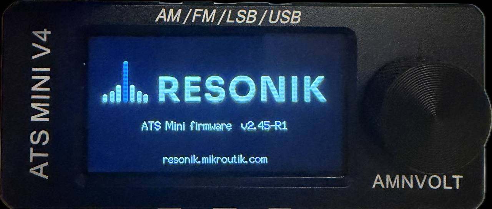
resonik.mikroutik.comنصب از مرورگر، نسخهی تازهی همین راهنما و آخرین تغییرات
فهرست
۱دربارهی RESONIK
۲نصب و بهروزرسانی
۳کنترلها و صفحهی اصلی
۴منوR2
۵حالت CW
۶نقشهی باند
۷ساعت، منطقهی زمانی و ساعت دوگانه
۸زمان باقیماندهی باتری
۹تضعیف خودکار
۱۰بیکنهاR2
۱۱اسکن حافظههاR2
۱۲ثبت سیگنالR2
۱۳شرایط انتشار امواجR2
۱۴برنامهی ایستگاههای EiBiR2
۱۵کنترل CAT از کامپیوترR2
۱۶دیکودر FT8 و FT4R3
۱۷دیکودر CWR3
۱۸Scan، Auto Scan و SeekR3
۱۹قفل فرکانس و سرعت پردازندهR3
۲۰Wi-Fi و صفحهی وب رادیوR4
۲۱کنترل از مرورگر (Web Control)R4
۲۲راهاندازی اولیهR5
۲۳Freq Entry، Band View و Auto-StoreR5
۲۴RTTY، NAVTEX، PSK31 و WEFAXR5
۲۵دیکودها در مرورگرR5
۲۶سیگنالهایی برای امتحان دیکودرهاR5
۲۷اعلام نسخهی جدید، پشتیبان و StatusR5
۲۸ارسال بازخورد و رفع اشکال
الفآموزش مدهای دیجیتالR5
۲۹سازندگان و مجوز
این راهنما برای فریمور {{VERSION}} نوشته شده و با هر نسخهی جدید بهروز میشود. نسخهی تازه همیشه در resonik.mikroutik.com است. نسخهی فریمور رادیو را در Menu ← System ← About ببینید.
بخشهایی که با R2 مشخص شدهاند از نسخهی 2.45-r2 ، بخشهای R3 از نسخهی 2.45-r3 بخشهای R4 از نسخهی 2.45-r4 و بخشهای R5 از نسخهی 2.46-r5 به بعد در دسترساند. نام گزینههای منو به همان شکل انگلیسی که روی صفحهی رادیو دیده میشود آمده است.
۱دربارهی RESONIK
RESONIK فریموری رایگان و متنباز برای رادیوی جیبی ATS Mini (با پردازندهی ESP32-S3 و تراشهی گیرندهی SI4732) است. این فریمور بر پایهی فریمور رسمی و متنباز ats-mini نسخهی 2.45 ساخته شده، همهی امکانات آن را حفظ میکند و امکاناتی برای شنوندگان موج کوتاه و آماتورهای رادیویی به آن اضافه میکند.
حالت CW با نمایش فرکانس واقعی سیگنال، فیلتر باریک و گام 10 Hz
نقشهی باند IARU منطقهی ۱ روی اسکیل و انتخاب خودکار LSB/USB
ساعت دوگانهی محلی و UTC، مناطق زمانی با ساعت تابستانی، همگامسازی مطمئن ساعت
تخمین زمان باقیماندهی باتری و تضعیف خودکار برای سیگنالهای خیلی قوی
منوی جدید با شش دسته و برگههای تنظیمات تمامصفحه (R2)
ردیاب بیکنها، اسکن حافظهها، ثبت سیگنال، شرایط انتشار امواج، برنامهی EiBi با روزهای پخش و کنترل CAT (R2)
دیکودر FT8/FT4 و CW، اسکنر باند، نقشهی باند خودکار برای منطقههای ۱، ۲ و ۳، قفل فرکانس، توان Wi-Fi و سرعت پردازنده (R3)
باندها، مودولاسیونها، حافظهها، RDS، Wi-Fi و بلوتوث همانند فریمور رسمی کار میکنند. راهنمای کامل فریمور رسمی (به انگلیسی): esp32-si4732.github.io/ats-mini/manual.html
۲نصب و بهروزرسانی
پیش از نصب از رادیو نسخهی پشتیبان بگیرید (راهنمای Backup در سایت ats-mini). همیشه میتوان با USB به فریمور رسمی برگشت.
نصب از مرورگر (بار اول)
سایت resonik.mikroutik.com را در Chrome یا Edge روی کامپیوتر باز کنید (گوشی پشتیبانی نمیشود).
رادیو را با کابل USB-C که داده را منتقل میکند (نه فقط کابل شارژ) به کامپیوتر وصل و روشن کنید.
نوع حافظه را ببینید: در فریمور رسمی Settings ← About و در RESONIK Menu ← System ← About. خط PSRAM یکی از این دو را نشان میدهد: 8192K یا 2048K.
در بخش Install سایت، دکمهی مربوط را بزنید: برای 8192K دکمهی 8 MB (OSPI) و برای 2048K دکمهی 2 MB (QSPI). سپس درگاه رادیو را از فهرست انتخاب کنید.
گزینهی Erase device را علامت نزنید تا تنظیمات و حافظهها حفظ شوند، سپس Install را بزنید. نصب حدود دو دقیقه طول میکشد و رادیو خودش دوباره روشن میشود.
بهروزرسانی از راه Wi-Fi (نسخههای بعدی)
وقتی RESONIK روی رادیو نصب است، نسخههای بعدی را بدون کابل نصب کنید: رادیو را به Wi-Fi وصل کنید (بخش ۲۰)، سپس Menu ← System ← Update FW. گزینهی Check نسخهی تازه را پیدا میکند و Update آن را نصب میکند. تنظیمات حفظ میشوند. در نسخهی R1 همین گزینه در Settings ← Update FW است.
نصب دستی
فایل resonik-ats-mini-{{VERSION}}-ospi.zip (یا -qspi) را از صفحهی Releases در GitHub بگیرید و با esptool این فایلها را بنویسید: ats-mini.ino.bootloader.bin در 0x0، ats-mini.ino.partitions.bin در 0x8000، boot_app0.bin در 0xe000 و ats-mini.ino.bin در 0x10000.
نشانی پروژه: github.com/ep3mhb/resonik-ats-mini
۳کنترلها و صفحهی اصلی
همهی کارها با یک ولوم (پیچ تنظیم) انجام میشود که هم میچرخد و هم فشرده میشود:
چرخاندنتنظیم فرکانس؛ در منو جابهجایی میان گزینهها و تغییر مقدارکلیکفشردن و رها کردن سریع (کمتر از نیم ثانیه): باز کردن منو و انتخاب گزینهفشار کوتاهنگه داشتن حدود یک ثانیه: تنظیم صدا، یا کار دوم هر گزینه؛ در منو، بستن منوفشار طولانینگه داشتن بیش از دو ثانیه: خاموش و روشن کردن صفحهی نمایش (رادیو کار میکند)
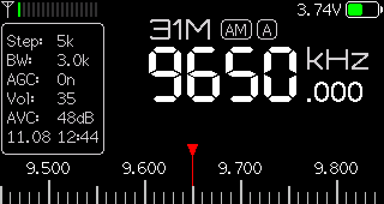
صفحهی اصلی روی باند ۳۱ متر
بخش صفحه
معنی
بالا، چپ
قدرت سیگنال
بالا، راست
باتری: ولتاژ یکی در میان با زمان باقیمانده (بخش ۸)، یا علامت شارژ
کادر اطلاعات (چپ)
Step گام تنظیم، BW پهنای فیلتر، AGC کنترل بهره یا تضعیف، Vol صدا، AVC، و در پایین تاریخ و ساعت
وسط
نام باند، مودولاسیون (مثلاً AM) و فرکانس
پایین
اسکیل فرکانس با نشانگر قرمز؛ روی باندهای آماتوری نوار رنگی نقشهی باند (بخش ۶)
برای عوض کردن باند: کلیک ← Tuning ← Band، باند را با چرخاندن انتخاب کنید و کلیک کنید. منو بسته میشود و ولوم بلافاصله فرکانس را تنظیم میکند.
۴منوR2
با یک کلیک، منو با شش دسته باز میشود. هر دسته یک دکمهی بزرگ رنگی با آیکون است. با چرخاندن ولوم انتخاب را جابهجا کنید و با کلیک دسته را باز کنید. در هر دسته، اولین دکمه Back (بازگشت) است. دستهای که بیش از پنج گزینه دارد صفحهی دوم دارد؛ نقطههای پایین صفحه نشان میدهند در کدام صفحه هستید. فشار کوتاه منو را از هر جا میبندد.
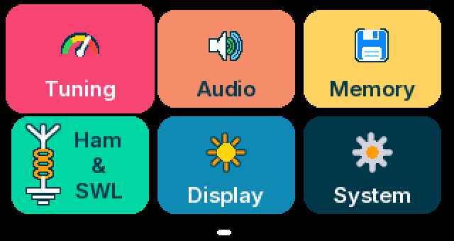
شش دستهی منودستهی Tuning
دسته
گزینهها
Tuning تنظیم
Band, Mode, Bandwidth, Freq Lock, FM Region, RDS, Scan, Auto Scan, Seek, Step, VFO A/B, Freq Entry, Band View, Capacitor
Audio صدا
Volume, AGC/ATTN, Auto Att., AVC, FM Stereo, SoftMute, Squelch
Memory حافظه
Memory, Logger, Mem Scan, Auto-Store
Ham & SWL آماتوری و موج کوتاه
Band Plan, Beacons, Calibration, CW Decoder, CW Strip, FT8/FT4, Digital, Dec. Audio, Load EiBi, Plan Area, Propagation
About, Bluetooth, Date/Time, DSP Patches, Knob, Off Timer, TCP Port, Time Zone, Update FW, USB Port, Wi-Fi, CPU, Upd. Notice, Enc. Accel.
کنترلهای شنیداری و برگههای تنظیمات
کنترلهایی مانند Band، Mode، Step یا Volume فهرست خود را مثل قبل باز میکنند؛ پس از انتخاب، منو بسته میشود تا ولوم بلافاصله فرکانس را تنظیم کند. تنظیمات به صورت برگهی تمامصفحه باز میشوند: یا فهرستی از مقدارها، یا یک عدد با نوار. با چرخاندن مقدار را عوض کنید؛ کلیک مقدار را نگه میدارد و به همان دسته برمیگردد.
برگهی فهرستی: Band Planبرگهی عددی: Brightness
تنظیم ولوم: System ← Knob
دو نوع ولوم روی این رادیوها نصب میشود: 20 clicks یا 30 clicks در هر دور. اگر ولوم یک گام را جا میاندازد، یا برای یک گام دو بار باید چرخاند، مقدار دیگر را انتخاب کنید. (در صفحهی وب رادیو همین گزینه Half-step Encoder نام دارد.)
برگهی Knob
شتاب ولوم: System ← Enc. Accel.R5
ولوم میتواند چرخش تند را بیش از یک گام در هر کلیک حساب کند، تا با یک حرکت سریع دست از یک سر باند به سر دیگر بروید و با چرخاندن آهسته دقیق بایستید. گزینهی Enc. Accel. (شتاب ولوم) این کار را روشن یا خاموش میکند.
مقدار
کار ولوم
On (پیشفرض)
چرخاندن آهسته: هر کلیک یک گام. هرچه تندتر بچرخانید هر کلیک ۲، ۴، ۸ و در بیشترین سرعت ۱۶ گام حساب میشود. با آهسته کردن، دوباره هر کلیک یک گام است.
Off
همیشه هر کلیک یک گام، هر قدر هم تند بچرخانید.
«گام» همان چیزی است که در آن لحظه میچرخانید: گام تنظیم فرکانس در صفحهی اصلی (مثلاً 1 kHz)، یک واحد از Volume، Brightness، Squelch، Calibration، Sleep Timer یا Off Timer، یا یک ردیف از فهرست Memory. فهرستهای انتخاب و خود منو همیشه با هر کلیک یک مورد جابهجا میشوند.
On را نگه دارید اگر در محدودههای پهن میگردید: باند ALL، باند FM یا یک باند پخش موج کوتاه. Off را انتخاب کنید اگر با حرکت سریع دست، فرکانس بیش از آنچه میخواستید میپرد؛ اگر باند را کانال به کانال میروید و کلیکها را میشمارید؛ یا اگر CW و SSB را با گام 10 Hz دقیق تنظیم میکنید و میخواهید همهی کلیکها یکسان باشند.
همین تنظیم در کنترل از مرورگر (Settings ← Power and time ← Knob speeds up when turned quickly) و در صفحهی Config وب رادیو (Encoder Acceleration) هم هست و پس از خاموش و روشن کردن رادیو میماند. این گزینه با Knob در بالا، که دربارهی نوع ولوم است، فرق دارد.
Enc. Accel. در آخرین صفحهی دستهی Systemبرگهی آن: Off یا On
خازن آنتن در موج متوسط: Tuning ← CapacitorR5
درون تراشهی گیرنده، در ورودی آنتن، یک خازن تنظیم کوچک برای موج متوسط هست. رادیو میتواند آن را روی یک مقدار ثابت نگه دارد، یا بگذارد تراشه با هر بار تنظیم فرکانس خودش آن را تنظیم کند تا بیشترین سیگنال از آنتن گرفته شود.
مقدار
کار رادیو
Off (پیشفرض)
خازن روی یک مقدار ثابت میماند. برای تقریباً همهی رادیوها درست است.
On
تراشه با هر تغییر فرکانس خودش خازن را تنظیم میکند.
کجا اثر دارد: فقط در باندهای MW1، MW2، MW3 و 160M (از 150 kHz تا 3.5 MHz). در FM، باندهای موج کوتاه و باند ALL هیچ چیز عوض نمیشود، هر کدام را انتخاب کنید.
به کدام رادیوها کمک میکند: فقط رادیویی که مدار Hi-Z ندارد؛ مدار ورودی کوچکی که بین آنتن تلسکوپی و تراشه اضافه شده است. بیشتر رادیوهای ATS Mini که اکنون فروخته میشوند این مدار را دارند و در آنها این گزینه فایدهای ندارد؛ برای همین خاموش است. اگر نمیدانید رادیوی شما کدام است، آن را Off بگذارید، یا امتحان کنید: شب یک ایستگاه ضعیف را در MW2 بگیرید، به قدرت سیگنال نگاه کنید، Capacitor را On کنید (رادیو دوباره روی همان ایستگاه تنظیم میشود) و مقایسه کنید. قویتر یا واضحتر شد: On بماند. فرقی نکرد یا ضعیفتر شد: به Off برگردید. امتحان کردن ضرری ندارد.
همین تنظیم در کنترل از مرورگر (Settings ← Receiver ← Automatic antenna capacitor) و در صفحهی Config وب رادیو (Automatic Antenna Capacitor) هم هست و پس از خاموش و روشن کردن رادیو میماند.
Capacitor در آخرین صفحهی دستهی Tuning
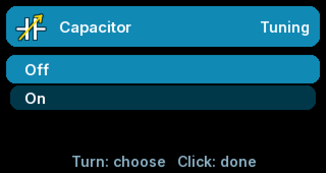
برگهی آن: Off یا On
منوی کلاسیکR4
Menu ← Display ← Menu Style ← Classic منوی فهرستی و کوچک فریمور رسمی را در گوشهی صفحه برمیگرداند. از نسخهی R4 این منو همان شش دستهی جدول بالا را دارد: ابتدا دسته را انتخاب کنید و با کلیک باز کنید؛ اولین ردیف هر دسته < Back است و عنوان کادر نام دسته را نشان میدهد. پس از تغییر یک تنظیم، منو به همان دسته برمیگردد. گزینهی Tiles منوی کاشیای را برمیگرداند.
سه گزینه در Tuning ایستگاه پیدا میکنند و هر کدام به شیوهی خود: Scan، Auto Scan و Seek. بخش ۱۸ آنها را کنار هم میگذارد.
۵حالت CW
Menu ← Tuning ← Mode ← CW (پس از AM). صفحه فرکانس خود سیگنال CW را نشان میدهد، همانطور که یک فرستندهگیرندهی CW نشان میدهد: آنقدر تنظیم کنید که فرکانس با فرکانس اعلامشده یکی شود و تن در وسط فیلتر قرار گیرد.
پهنای فیلتر
تن
کاربرد
0.5k (پیشفرض)
500 Hz
باندهای شلوغ، سیگنالهای ضعیف
1.0k
1000 Hz
پیدا کردن سیگنال، تنظیم سریعتر
1.2k و پهنتر
700 Hz
گوش دادن به کل باند
گام از 10 Hz شروع میشود؛ آن را در Menu ← Tuning ← Step عوض کنید. CW از مقدار کالیبراسیون USB همان باند استفاده میکند (Menu ← Ham & SWL ← Calibration).
۶نقشهی باند
روی باندهای آماتوری ۱۶۰ تا ۱۰ متر، نواری رنگی زیر اسکیل نقشهی باند IARU منطقهی ۱ را نشان میدهد و نام بخشی که در آن هستید کنار نشانگر میآید.
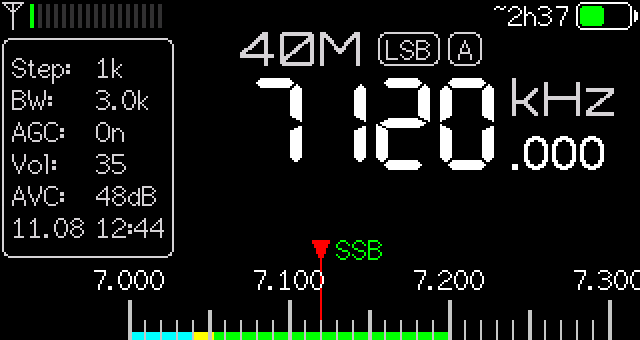
۴۰ متر، بخش SSB۴۰ متر، بخش CW
رنگ
بخش
فیروزهای
فقط CW
زرد
مدهای باریک: CW و دیجیتال (FT8، PSK، RTTY…)
قرمز
بیکنهای بینالمللی (NCDXF/IARU)
سبز
همهی مدها، از جمله صوتی SSB
خاکستری
ماهواره و FM (۱۰ متر)
Menu ← Ham & SWL ← Band Plan:
Off: بدون نوار.
Scale: فقط نوار و نام بخش.
Auto (پیشفرض): با ورود به هر بخش، مد، فیلتر و گام هم خودکار تنظیم میشوند: CW با فیلتر باریک در بخش CW، USB برای دیجیتال و بیکنها، و در بخش صوتی LSB زیر ۱۰ مگاهرتز و USB بالای آن. پیام کوتاهی آن را تأیید میکند. اگر خودتان مد را عوض کنید، انتخاب شما تا خروج از آن بخش میماند. در AM فقط وقتی از بیرون وارد باند آماتوری میشوید عوض میشود.
منطقهی نقشه: Plan AreaR3
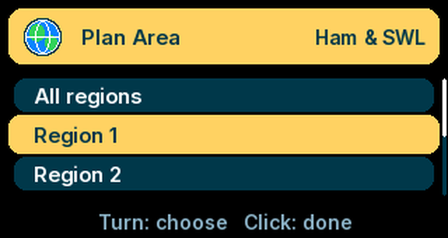
برگهی Plan Area
گزینه
آنچه نشان میدهد
All regions
باندهای همهی منطقهها: جزئیات منطقهی ۱ هر جا که منطقهی ۱ آن باند را دارد، و بخشهای پهنتر منطقههای ۲ و ۳ بیرون از آن (۸۰ متر تا 4000 و ۴۰ متر تا 7300 کیلوهرتز)
Region 1
اروپا، آفریقا، خاورمیانه (پیشفرض)
Region 2
قارهی آمریکا: ۱۶۰ متر از 1800، ۸۰ متر تا 4000، ۴۰ متر تا 7300 کیلوهرتز
Region 3
آسیا و اقیانوسیه: ۱۶۰ متر از 1800، ۸۰ متر تا 3900، ۴۰ متر تا 7300 کیلوهرتز
Iran (EP)
منطقهی ۱ بدون باندهای ۱۶۰، ۸۰ و ۳۰ متر که در جدول ملی تخصیص ندارند
UAE (A6)
منطقهی ۱ با ۱۶۰ متر محدود به 1810–1850 کیلوهرتز
بخشهایی که کشور انتخابشده اجازه نمیدهد خاکستری تیره و با نام NOT ALLOWED نشان داده میشوند.
نقشههای منطقهی ۲ و ۳ سادهشده و فقط برای راهنماییاند. تخصیصهای ملی متفاوتاند؛ پیش از ارسال با رادیوی دیگر، مجوز خود را بررسی کنید.
۷ساعت، منطقهی زمانی و ساعت دوگانه
Menu ← System ← Time Zone ابتدا UTC و سپس همهی اختلافهای زمانی را نشان میدهد، با نام شهرها کنار آنها؛ مثلاً دبی و مسقط کنار UTC+4 و تهران کنار UTC+3:30. شهرهای دارای ساعت تابستانی خودکار تغییر میکنند.
برگهی Time Zone
وقتی منطقهی زمانی UTC نیست، خط ساعت در کادر اطلاعات هر چند ثانیه یک بار میان تاریخ و ساعت محلی و ساعت UTC عوض میشود. UTC زمانی است که برنامهی ایستگاهها، ثبت سیگنال و جدول بیکنها با آن کار میکنند. Time: --:-- یعنی ساعت هنوز تنظیم نشده است.
Menu ← System ← Date/Time ساعت جاری را به UTC نشان میدهد. با چرخاندن مقدار را عوض کنید، با کلیک به بخش بعد بروید و با فشار کوتاه ذخیره کنید. اگر چیزی را عوض نکنید ساعت دست نمیخورد.
تنظیم خودکار ساعت
رادیو باتری ساعت ندارد و با خاموش شدن، ساعت از دست میرود. برای تنظیم خودکار در هر بار روشن شدن:
شبکهی Wi-Fi خود را به رادیو اضافه کنید (بخش ۲۰).
Menu ← System ← Wi-Fi ← Sync Only را انتخاب کنید. رادیو وصل میشود، ساعت را تنظیم میکند و برای صرفهجویی در باتری Wi-Fi را خاموش میکند. (حالت Connect هم ساعت را تنظیم میکند و وصل میماند.)
پیامها: Time synchronized (از سرور زمان اینترنت)، Time set from web (شبکه سرورهای زمان را مسدود میکند و ساعت از یک سرور وب خوانده شد)، یا Time sync failed با خط دومی که علت را میگوید. بدون Wi-Fi، ایستگاه FM دارای ساعت RDS هم ساعت را تنظیم میکند؛ یا در صفحهی وب رادیو Use Browser Date/Time ساعت و منطقهی زمانی گوشی یا کامپیوتر را کپی میکند.
۸زمان باقیماندهی باتری
روی باتری، ولتاژ در بالای صفحه یکی در میان با تخمین زمان باقیماندهی شنیدن نمایش داده میشود، مثلاً ~8h20 (هشت ساعت و بیست دقیقه). علامت ~ یعنی مصرف معمول فرض شده است؛ پس از حدود ده دقیقه رادیو مصرف واقعی خود را اندازه میگیرد و ~ حذف میشود. روشنایی صفحه، بلندی صدا و Wi-Fi نتیجه را تغییر میدهند. هنگام شارژ با USB علامت شارژ نمایش داده میشود.
R5Menu ← Display ← Battery تعیین میکند کنار علامت باتری چه نمایش داده شود: Volts + time (همان که در بالا آمد)، Volts (فقط ولتاژ)، Percent (درصد) یا Icon only (فقط علامت).
۹تضعیف خودکار
در AM، وقتی Menu ← Audio ← AGC/ATTN روی On است، سیگنال خیلی قوی (یک ایستگاه موج متوسط محلی یا یک فرستندهی بزرگ در شب) میتواند گیرنده را اشباع کند و صدای ناصاف و ایستگاههای ناخواسته بسازد. رادیو در این حالت پلهپله تضعیف اضافه میکند و روی ایستگاههای ضعیفتر آن را برمیدارد. هنگام فعال بودن، کادر اطلاعات Att: A12 را نشان میدهد (A یعنی خودکار). خاموش کردن: Menu ← Audio ← Auto Att.؛ تنظیم دستی AGC/ATTN همیشه اولویت دارد.
۱۰بیکنهاR2
هجده بیکن پروژهی بینالمللی NCDXF/IARU به نوبت روی فرکانسهای 14100، 18110، 21150، 24930 و 28200 کیلوهرتز، هر کدام ده ثانیه، ارسال میکنند و هر سه دقیقه تکرار میشوند. هر بیکن نشانهی خود را با CW میفرستد و سپس چهار خط تیره با توانهای 100 W، 10 W، 1 W و 0.1 W؛ تعداد خطهایی که میشنوید کیفیت مسیر را نشان میدهد.
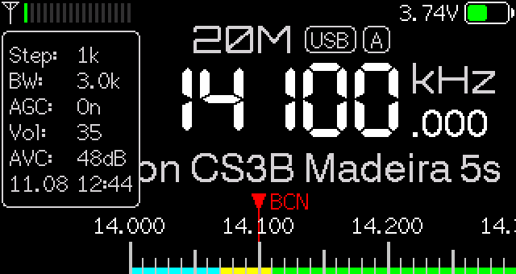
روی 14100: نام بیکن در حال ارسال و ثانیههای باقیمانده
روی یکی از این پنج فرکانس (CW یا USB)، خط ایستگاه بیکن در حال ارسال و ثانیههای باقیمانده را نشان میدهد، مثلاً Beacon 4S7B Sri Lanka 6s. ساعت رادیو باید تنظیم باشد.
Menu ← Ham & SWL ← Beacons و انتخاب یک نشانه، رادیو را دنبالکنندهی آن بیکن میکند: هر ده ثانیه همراه بیکن از ۲۰ متر تا ۱۰ متر باند عوض میکند و در زمان سکوت آن منتظر میماند. تنظیم دستی فرکانس آن را پایان میدهد.
R5هر بیکن از هر سه دقیقه ۵۰ ثانیه روی هوا است. در زمان سکوت آن، رادیو روی 14.100 MHz با CW منتظر میماند، همانجا که نوبت بعدی بیکن شروع میشود، و به محض شروع دنبال کردن به آنجا میرود تا بلافاصله ببینید کار شروع شده است. تنظیم دستی، باند دیگر یا FM دنبال کردن را همانجا که هستید پایان میدهد. انتخاب Off یا Names only در فهرست، یا Stop در کنترل از مرورگر، آن را پایان میدهد و رادیو را به باند، فرکانس و مدی که پیش از آن داشت برمیگرداند. در کنترل از مرورگر، بالای زبانهی Beacons بخش Follow a beacon هست: بیکن را انتخاب کنید و Start را بزنید، و برای پایان Stop. خط کنار دکمهها میگوید کدام بیکن دنبال میشود و چرا دنبال کردن شروع نشد یا پایان یافت (ساعت تنظیم نیست، یا فرکانس را عوض کردید).
R4دو گزینهی اول این فهرست: Off نام بیکنها را هم خاموش میکند، و Names only فقط نام بیکن در حال ارسال را روی این پنج فرکانس نشان میدهد، بدون دنبال کردن. این انتخاب پس از خاموش و روشن کردن رادیو میماند. نقشهی جهانی بیکنها در صفحهی کنترل از مرورگر است (بخش ۲۱).
۱۱اسکن حافظههاR2
Menu ← Memory ← Mem Scan حافظههای ذخیرهشده (دستکم دو حافظه) را یکییکی بررسی میکند و روی هر حافظهای که سیگنال دارد میایستد؛ چهار ثانیه پس از قطع سیگنال ادامه میدهد. سیگنال یعنی سطح Squelch همان مودولاسیون اگر تنظیم کرده باشید، وگرنه SNR برابر 6 dB یا بیشتر. چرخاندن ولوم یا کلیک اسکن را متوقف میکند و رادیو روی همان حافظه میماند.
۱۲ثبت سیگنالR2
Menu ← Memory ← Logger هر ۱۰ ثانیه، هر دقیقه یا هر پنج دقیقه یک خط ثبت میکند: ساعت UTC، فرکانس، مودولاسیون، باند، قدرت سیگنال (dBµV)، SNR (dB) و نام ایستگاه. رادیو را شب روی یک فرکانس بگذارید تا ببینید مسیر کی باز و بسته میشود.
فایل را از صفحهی وب رادیو با Log (CSV) دانلود کنید و در برنامهی صفحهگسترده (مثل Excel) باز کنید. گزینهی Clear log در همان منو (با کلیک برای تأیید) آن را پاک میکند. ثبت در حجم یک مگابایت خودبهخود متوقف میشود.
۱۳شرایط انتشار امواجR2
Menu ← Ham & SWL ← Propagation شار خورشیدی (SFI)، تعداد لکههای خورشیدی، شاخصهای A و K، سطح اشعهی X و وضعیت روز و شب باندهای 80–40، 30–20، 17–15 و 12–10 متر را از سایت hamqsl.com (N0NBH) نشان میدهد. دادهها هر بار که Wi-Fi وصل است (از جمله همگامسازی ساعت هنگام روشن شدن) و حداکثر هر ۱۵ دقیقه یک بار گرفته میشوند. SFI بالاتر و K پایینتر یعنی شرایط بهتر در باندهای بالاتر.
۱۴برنامهی ایستگاههای EiBiR2
Menu ← Ham & SWL ← Load EiBi برنامهی فصلی ایستگاههای پخش موج کوتاه را همراه با روزهای پخش بارگذاری میکند (به Wi-Fi نیاز دارد). ایستگاهی که فقط آخر هفته پخش دارد فقط در همان روزها نمایش داده میشود و زبان و منطقهی هدف پس از نام میآید، مثلاً BBC World Service [E > ME] (انگلیسی، به خاورمیانه). پس از بهروزرسانی از نسخهی R1، برنامه را یک بار دیگر بارگذاری کنید.
۱۵کنترل CAT از کامپیوترR2
Menu ← System ← USB Port ← CAT TS-480 رادیو را وادار میکند به فرمانهای Kenwood TS-480 روی درگاه USB پاسخ دهد، تا نرمافزارها بتوانند فرکانس و مودولاسیون را بخوانند و تنظیم کنند و قدرت سیگنال را بخوانند. در نرمافزار (flrig، Hamlib، WSJT-X فقط دریافت، fldigi یا نرمافزار لاگ) رادیوی Kenwood TS-480 (Hamlib rig 2028) را روی درگاه سریال رادیو انتخاب کنید، با split و CAT PTT خاموش؛ سرعت اهمیتی ندارد. فرمانهای ارسال پذیرفته نمیشوند، چون این دستگاه فقط گیرنده است. برای ابزارهای کنترل از راه دور و عکس از صفحه، به Ad hoc برگردید.
R5از R5 نام این گزینه CAT TS-480 است (پیشتر CAT بود) و روی دو درگاه دیگر هم هست: TCP Port ← CAT TS-480 برای نرمافزاری که در همان شبکهی Wi-Fi است (نشانی رادیو، درگاه 60000)، و Bluetooth ← CAT TS-480. همراه آن VFO A و B، اسکلچ، گام بالا و پایین و گزارش خودکار وضعیت هم آمده است؛ مد CW همان مد شمارهی ۳ در TS-480 است.
نمونه: flrigR5
flrig در حال نمایش رادیو روی 93.4 MHz FM
flrig نرمافزار رایگان کنترل رادیو برای macOS، Windows و Linux است (w1hkj.org). این بخش با نسخهی 2.0.12 آن آزمایش شده است.
روی رادیو USB Port ← CAT TS-480 را انتخاب و کابل را وصل کنید.
در flrig مسیر Config ← Setup ← Xcvr را باز کنید. Rig: TS-480SAT. Port: درگاه سریال رادیو؛ در مک نامش با /dev/cu.usbmodem شروع میشود. Baud: هر مقداری، مثلاً 115200. تیک RTS/CTS، RTS +12 v و DTR +12 v را نزنید و Init را بزنید.
در Poll تیک S-mtr را بزنید، وگرنه S-meter نرمافزار خالی میماند.
در Restore اگر میخواهید رادیو آنچه را از نرمافزار تنظیم کردهاید نگه دارد، تیکها را بردارید. با تیکها، flrig هنگام بستهشدن رادیو را به حالتی که پیدا کرده بود برمیگرداند.
از راه Wi-Fi به جای کابل: روی رادیو TCP Port ← CAT TS-480؛ در flrig مسیر Config ← Setup ← TCPIP & TCI: نشانی رادیو و درگاه 60000 را وارد کنید و تیک Use tcpip را بزنید. هر بار یک نرمافزار وصل میشود؛ کنترل از مرورگر هم میتواند همزمان باز باشد، و صفحههای FT8، CW و Digital با Wi-Fi روشن کار میکنند.
آنچه میبینید
نرمافزار تغییر فرکانس روی رادیو را دنبال میکند و فرکانس، مد و بلندی صدا را تنظیم میکند؛ Tune و ارسال کاری نمیکنند. بلندی صدا در flrig درصد است: ۵۰ آنجا برابر 31 از 63 رادیو است.
flrig بالاتر از 99.999 MHz چیزی نشان نمیدهد، چون TS-480 تا 60 MHz است: بخش بالای باند FM و حافظههای آن دیده نمیشوند. خود رادیو مثل همیشه کار میکند.
هنگام Seek و Scan نرمافزار ثابت میماند: رادیو پس از پایان جستوجو پاسخ میدهد. Auto Scan و Mem Scan دنبال میشوند.
بستن نرمافزار رادیو را تغییر نمیدهد. اگر هنگام کار کابل کشیده شود، flrig را ببندید و دوباره باز کنید.
۱۶دیکودر FT8 و FT4R3
Menu ← Ham & SWL ← FT8/FT4 صفحهای تمامصفحه باز میکند که سیگنالهای FT8 را از صدای خود رادیو دیکود میکند. رادیو روی فرکانس FT8 همان باندی که در آن هستید (یا ۴۰ متر) با USB و فیلتر 3.0k تنظیم میشود. زیر سربرگ، آبشار طیف (واترفال) حرکت میکند و پس از هر دورهی ۱۵ ثانیهای پیامها با گزارش سیگنال (dB)، فرکانس صوتی (Hz) و متن نمایش داده میشوند؛ فراخوانهای CQ سبز هستند.
صفحهی FT8 روی ۴۰ متر
چرخاندن: عوض کردن باند: ۱۶۰، ۸۰، ۴۰، ۳۰، ۲۰، ۱۷، ۱۵، ۱۲ و ۱۰ متر، و پس از آن فرکانسهای FT4 باندهای ۸۰ تا ۱۰ متر (FT4 زرد، با دورههای ۷٫۵ ثانیهای).
کلیک: پاک کردن فهرست. فشار کوتاه: خروج؛ رادیو دقیقاً به حالت قبل برمیگردد.
اگر ساعت تنظیم باشد (همگامسازی با Wi-Fi) از همان دورهی اول دیکود میکند. بدون ساعت هم دیکود میکند: سربرگ No clock: syncing را نشان میدهد تا زمانبندی دورهها را از ایستگاههایی که میشنود پیدا کند (معمولاً یکی دو دقیقه)، سپس Synced to band.
پایین، چپ: In سطح صدایی است که به دیکودر میرسد (۱۰ تا ۱۵۰ خوب است) و Last تعداد پیامهای آخرین دوره.
R5این صفحه را از مرورگر هم میتوان باز کرد و دید، همراه با کشور ایستگاهها و نقشه (بخش ۲۵). صفحه صدای رادیو را تا 3 kHz میگیرد که برای FT8 و FT4 کافی است؛ انتخاب 6 kHz در بخش ۲۵ آمده است. سیگنالهایی برای امتحان آن در بخش ۲۶ هست.
این صفحه به برد V4B نیاز دارد که خط بلندگو را به پردازنده وصل کرده است؛ روی بردهای دیگر پیام No audio on the decoder input نمایش داده میشود. هنگام باز بودن صفحه، Wi-Fi موقتاً خاموش میشود، مگر اینکه کنترل از مرورگر در یک مرورگر باز باشد یا نرمافزاری از راه Wi-Fi به رادیو وصل باشد (بخش ۱۵). در بردهایی که صدا را پس از تقویتکنندهی بلندگو میگیرند، بلندگو روشن میماند (Spk کنار سطح صدا).
سیگنالهای FT8 اغلب ۱۵ تا ۲۰ دسیبل زیر نویز هستند. آنتن تلسکوپی داخل خانه تعداد کمی از آنها را میشنود: کنار پنجره یا در بالکن، یا چند متر سیم وصلشده به آنتن، تفاوت زیادی ایجاد میکند. شارژر، لامپ LED و لپتاپ را از رادیو دور نگه دارید و رادیو را با باتری کار کنید.
۱۷دیکودر CWR3
Menu ← Ham & SWL ← CW Decoder کد مورس را در صفحهای تمامصفحه به متن تبدیل میکند، همراه با سرعت (WPM)، فرکانس تن، نوار سطح و نشانگر کلید. طوری تنظیم کنید که تن در وسط فیلتر CW باشد. چرخاندن: تنظیم فرکانس، کلیک: پاک کردن متن، فشار کوتاه: خروج. سرعت خودبهخود از حدود ۵ تا ۴۰ کلمه در دقیقه دنبال میشود. صداهای ناگهانی جوّی و تقتقها نادیده گرفته میشوند؛ حرفهایی که خوانده نمیشوند با * نشان داده میشوند.
Menu ← Ham & SWL ← CW Strip ← On متن دیکودشده را در حالت CW در پایین صفحهی اصلی نشان میدهد. مانند صفحهی FT8 به برد V4B نیاز دارد و وقتی Wi-Fi خاموش است کار میکند.
۱۸Scan، Auto Scan و SeekR3
سه گزینه در Menu ← Tuning ایستگاه پیدا میکنند. نامشان شبیه است ولی کارشان فرق دارد: Scan باند را به شما نشان میدهد، Auto Scan خودش باند را میگردد، و Seek شما را به ایستگاه بعدی میبرد. (نام Auto Scan تا R4، Scanner بود.)
Scan
Auto Scan
Seek
چیست
تصویری از باند. با یک نگاه میبینید سیگنالها کجا هستند و روی یک قله تنظیم میکنید.
جستوجویی که ادامه دارد. بدون دستزدن به ولوم به سراسر یک باند گوش میدهید.
پرش به ایستگاه بعدی، یک بار. با سرعت دلخواه خودتان از ایستگاهی به ایستگاه دیگر میروید.
چه میشود
رادیو یک بار با صدای بسته ۲۰۰ نقطه را دور فرکانس شما اندازه میگیرد، برمیگردد و نمودار را رسم میکند: پهنای آن 2 MHz و در FM 20 MHz است. علامت قرمز فرکانس شماست.
رادیو از فرکانس شما گامبهگام در باند حرکت میکند. روی سیگنال میایستد و آن را میشنوید (نوشتهی Hold)، سپس ادامه میدهد. در لبهی باند از سر دیگر ادامه میدهد.
با هر چرخش ولوم، رادیو با صدای بسته در همان جهت میگردد و روی اولین ایستگاه میایستد. تا وقتی دوباره نچرخانید همانجا میماند.
چرخاندن
مثل همیشه تنظیم میکند و نمودار زیر علامت قرمز جابهجا میشود. روی ایستگاهها نمیایستد.
جهت را تعیین میکند، راست به بالا و چپ به پایین، و فوراً ادامه میدهد.
راست: ایستگاه بعدی بالاتر. چپ: ایستگاه بعدی پایینتر. فشردن و چرخاندن، تنظیم دستی است.
کلیک
Scan را میبندد. فشار کوتاه دوباره اندازه میگیرد.
روی همان فرکانس میایستد.
Seek را میبندد. فشار کوتاه به برنامهی EiBi میرود (پایینتر).
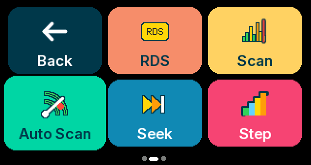
هر سه در برگهی دوم TuningScan: سیگنال (S، سبز) و سیگنال به نویز (N، آبی)Auto Scan در حال حرکت به پایین روی ۴۰ متر
Auto Scan روی سیگنال میایستد: در سطح Squelch اگر تنظیم شده باشد، وگرنه با SNR برابر 6 dB یا بیشتر. در SSB و CW تا وقتی ایستگاه شنیده میشود میماند و چهار ثانیه پس از قطع آن ادامه میدهد. روی ایستگاههای پخش AM و FM که هیچوقت ساکت نمیشوند، روی هر ایستگاه پنج ثانیه میماند؛ در FM پس از هر ایستگاه ۲۰۰ کیلوهرتز بعدی را رد میکند تا یک ایستگاه قوی دو بار آن را متوقف نکند. گام حرکت همان گام تنظیم است، دستکم 1 kHz در SSB، 500 Hz در CW و 100 kHz در FM. اگر روی نویز زیاد میایستد، اول سطح Squelch را تنظیم کنید.
Seek در AM و FM از جستوجوی خود تراشهی گیرنده استفاده میکند. در SSB و CW (از R4) باند را کیلوهرتز به کیلوهرتز میگردد و روی اولین سیگنال میایستد، با هر چرخش حداکثر 200 kHz؛ اگر چیزی پیدا نکند پیام میدهد و به نقطهی شروع برمیگردد. با فشار کوتاه در Seek یک ساعت در کادر آن دیده میشود: از آن پس هر چرخش به فرکانس بعدیای میرود که برنامهی EiBi (بخش ۱۴) در این ساعت برای آن ایستگاهی دارد. این حالت به برنامهی بارگذاریشده و ساعت تنظیمشده نیاز دارد و در FM نیست.
برای دیدن یک باند کامل در تمام صفحه، همراه با قویترین سیگنالهایش، Band View در بخش ۲۳ را ببینید.
۱۹قفل فرکانس و سرعت پردازندهR3
Menu ← Tuning ← Freq Lock ← On: ولوم به جای تنظیم فرکانس، بلندی صدا را تنظیم میکند و تنظیم رقمبهرقم (فشار و چرخاندن) غیرفعال میشود. علامت قفل کنار مد نشان میدهد قفل روشن است؛ پس از خاموش و روشن کردن هم میماند.
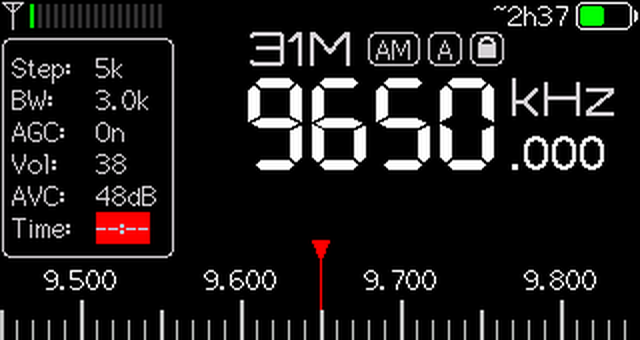
علامت قفل کنار مدبرگهی CPU
Menu ← System ← CPU (تا R3 با نام Performance): 80 MHz (مانند فریمور رسمی، کممصرفترین)، 160 MHz یا 240 MHz. سرعت بیشتر صفحه و منوها را سریعتر میکند و باتری بیشتری مصرف میکند؛ تخمین زمان باتری تفاوت را نشان میدهد. صفحهی FT8 هنگام باز بودن همیشه با 240 MHz کار میکند. R5صفحهی Digital هم همینطور است، و همچنین خود رادیو تا وقتی کنترل از مرورگر در یک مرورگر باز است، تا صفحه سریع پاسخ دهد؛ با بسته شدن آن، تنظیم شما دوباره اعمال میشود. صفحهی Status وب رادیو سرعتی را که تنظیم کردهاید نشان میدهد.
۲۰Wi-Fi و صفحهی وب رادیوR4
همهی تنظیمات Wi-Fi در یک صفحه است: Menu ← System ← Wi-Fi. بالای صفحه نشان میدهد صفحهی وب رادیو را با چه نشانی باز کنید: نشانی IP رادیو در شبکهی خانه (یا atsmini.local)، یا 10.1.1.1 پس از اتصال به شبکهی خود رادیو. زیر آن سه ردیف هست: Mode، Join a network و Power. با کلیک روی Mode یا Power، با چرخاندن مقدار را عوض کنید و با کلیک اعمال کنید؛ فشار کوتاه لغو میکند.
صفحهی Wi-Fi: نشانی، Mode، Join a network، Powerفهرست شبکهها با قدرت سیگنال، نوع امنیت و کانال
Mode
کار
Off
Wi-Fi خاموش (کمترین مصرف باتری)
AP Only
رادیو شبکهی خودش را میسازد: به شبکهی ATS-Mini وصل شوید و http://10.1.1.1 را باز کنید
AP+Connect
شبکهی خودش و همزمان اتصال به شبکهی خانه
Connect
فقط اتصال به شبکهی خانه
Sync Only
هنگام روشن شدن وصل میشود، ساعت را تنظیم میکند و خاموش میشود
اتصال به شبکهی خانه روی خود رادیو
Join a network شبکههای اطراف را از قوی به ضعیف نشان میدهد. شبکه را انتخاب کنید و رمز را با صفحهکلید روی صفحه وارد کنید: با چرخاندن ولوم روی کلیدها حرکت کنید و با کلیک هر حرف را بنویسید. aA حروف بزرگ (برای یک حرف)، #+= نشانهها، Del پاک کردن، و Show نمایش رمز است. رمز به صورت ستاره نشان داده میشود و فقط آخرین حرف دیده میشود تا اشتباه تایپی را ببینید. OK پس از هشت حرف فعال میشود. شبکه ذخیره میشود و رادیو بلافاصله وصل میشود (حالت AP+Connect) و نشانی IP را بزرگ نشان میدهد.
صفحهکلید روی صفحه برای رمز شبکه
رادیو فقط Wi-Fi باند 2.4 GHz دارد؛ شبکههای 5 GHz در فهرست دیده نمیشوند. اگر مودم شما هر دو باند را با یک نام دارد، رادیو به بخش 2.4 GHz وصل میشود.
صفحهی وب رادیو (با رنگ تیره) تنظیمات، حافظهها، بهروزرسانی و فایل ثبت سیگنال را دارد. همچنان میتوان شبکه را از صفحهی Wi-Fi آن هم ذخیره کرد. در صفحهی http://<IP>/update میتوان فایل …-ota.bin یک نسخه را مستقیم نصب کرد.
۲۱کنترل از مرورگر (Web Control)R4
وقتی رادیو و گوشی یا کامپیوتر در یک شبکه هستند، http://<IP>/control را باز کنید (یا روی Control در صفحهی وب رادیو بزنید). همهی رادیو در مرورگر است و هر تغییری بلافاصله روی رادیو اعمال و ذخیره میشود. بالای صفحه همیشه فرکانس، باند، مد، گام، فیلتر، S-meter، باتری (ولتاژ و درصد)، شمارهی حافظه و نام و متن RDS دیده میشود.
زبانهی Receiver روی گوشیزبانهی Beacons: نقشهی جهانی بیکنها
زبانه
کار
Receiver
تنظیم گامبهگام، Seek، وارد کردن فرکانس (کیلوهرتز؛ در FM مگاهرتز)، دکمههای مد (در FM با نشان Stereo/Mono)، فهرست Band، Step، Filter و AGC، ولوم، یک دکمه برای هر باند، و نمای باند: Sweep قدرت سیگنال را در ۴۱ نقطهی اطراف فرکانس میسنجد؛ روی هر ستون بزنید تا رادیو روی آن برود. از R5، دکمهی Band View همان Band View رادیو را شروع میکند و در مرورگر نشان میدهد (بخش ۲۳)
Memory
رفتن به یک حافظه، ذخیرهی ایستگاه فعلی و پاک کردن
Beacons
نقشهی هجده بیکن NCDXF/IARU. پنج بیکنی که در حال ارسالاند به رنگ باند خود میتپند. روی یک فرکانس بزنید تا رادیو با CW روی آن برود؛ رادیو در هر نوبت دهثانیهای سیگنال را میسنجد و هر بیکن را رنگ میکند: سبز (خوب شنیده شد)، زرد (ضعیف)، خاکستری (شنیده نشد). پس از یک دور سهدقیقهای معلوم است این باند به کدام نقاط جهان باز است. با زدن روی یک بیکن، رادیو آن را در باندها دنبال میکند؛ یا از Follow a beacon با Start و Stop در بالای زبانه استفاده کنید (R5، بخش ۱۰)
Decodes R5
دیکودرهای رادیو را شروع و متوقف میکند و آنچه دیکود میکنند نشان میدهد: آبشار طیف، پیامهای FT8 و FT4 با کشور و پرچم، نقشه، متن CW، RTTY، NAVTEX و PSK31 و نقشههای WEFAX (بخش ۲۵)
Settings
همهی تنظیمات منوهای رادیو در پنج دسته. حالتهای Bluetooth، USB و Wi-Fi و بهروزرسانی فریمور فقط روی خود رادیو هستند تا ارتباط قطع نشود
More
صفحهی خود رادیو با ولوم و دکمهها (برای منوها و صفحههای FT8 و CW؛ فقط وقتی باز است ارسال میشود)، و Listen
R5کنار نام ایستگاه، صفحه ساعت رادیو را نشان میدهد: UTC و، اگر منطقهی زمانی رادیو UTC نباشد، Local (محلی)؛ تا وقتی رادیو ساعت ندارد Clock not set دیده میشود. پیامهای کوتاه رادیو (جستوجویی که چیزی پیدا نکرد، بیکنی که دنبال میشود) پایین پنجره نمایش داده میشوند. تا وقتی صفحه در یک مرورگر باز است، رادیو پردازنده را با بیشترین سرعت به کار میگیرد تا صفحه سریع پاسخ دهد؛ این کمی باتری بیشتر مصرف میکند.
شنیدن صدای رادیو در مرورگر (آزمایشی)
Listen صدای رادیو را در مرورگر پخش میکند. فقط روی برد V4B کار میکند و کیفیت آن در حد تلفن است، چون صدا از خط بلندگو با ۸ کیلوهرتز نمونهبرداری میشود و Wi-Fi و گیرنده از یک مبدل مشترک استفاده میکنند. Hiss filter خش را کم میکند. با Radio speaker while listening بلندگوی رادیو را آرامتر کنید؛ ولی روی V4B صدای مرورگر هم ضعیفتر میشود، پس Normal بهترین صدا را میدهد. در Chrome بهتر کار میکند.
روی برد V4B صدای دیکودرها و Listen از خط بلندگو گرفته میشود. با وصل بودن هدفون به رادیو این خط قطع میشود: دیکودرهای FT8، FT4 و CW و صدای مرورگر کار نمیکنند. برای دیکود کردن هدفون را جدا کنید.
۲۲راهاندازی اولیهR5
رادیویی که تازه نصب شده، یا پس از بازگشت به تنظیمات کارخانه، چهار چیز را به نوبت میپرسد: منطقهی زمانی، نوع ولوم (۲۰ یا ۳۰ کلیک در هر دور)، نقشهی باند متناسب با پروانهی شما، و اینکه آیا Wi-Fi همین حالا تنظیم شود. چرخاندن: انتخاب، کلیک: پرسش بعدی، فشار کوتاه: رد کردن. همه را میتوان بعداً در منو عوض کرد. رادیویی که از نسخهی قبلی بهروز شده تنظیمات خود را نگه میدارد و این صفحهها را نمیبیند.
اولین پرسش از چهار پرسش
برای دیدن دوبارهی آن، رادیو را به تنظیمات کارخانه برگردانید: رادیو را خاموش کنید، ولوم را فشرده نگه دارید، رادیو را روشن کنید و ولوم را نگه دارید تا Resetting Preferences دیده شود.
بازگشت به تنظیمات کارخانه تنظیمات، حافظهها، شبکههای Wi-Fi و فایلهای روی رادیو (برنامهی ایستگاهها، فایل ثبت سیگنال، تصویر شروع و DSP Patches) را پاک میکند. اول در صفحهی Config وب رادیو نسخهی پشتیبان بگیرید (بخش ۲۷) و بعد آن را بازگردانید.
۲۳Freq Entry، Band View و Auto-StoreR5
وارد کردن فرکانس: Tuning ← Freq Entry
صفحهکلید عددی برای رفتن مستقیم به یک فرکانس. با چرخاندن ولوم روی کلیدها حرکت کنید و با کلیک هر کلید را بزنید: عدد را وارد کنید و سپس kHz یا MHz را بزنید. پس 14074 و kHz، یا 14.074 و MHz، هر دو رادیو را روی 14.074 MHz میبرند. اگر فرکانس بیرون از باند فعلی باشد، رادیو باند را عوض میکند و در صورت نیاز به FM میرود یا از آن بیرون میآید. Del آخرین رقم را پاک میکند، Clear همه را، و Back یا فشار کوتاه بدون تنظیم خارج میشود. محدوده: 150 kHz تا 30 MHz و 64 تا 108 MHz.
دیدن باند: Tuning ← Band View
Band View پیوسته ۱۶۰ فرکانس اطراف فرکانس فعلی را جاروب میکند. بالای صفحه جاروب در حال انجام را به شکل ستون نشان میدهد که از چپ پر میشود؛ زیر آن جاروبهای تمامشده یک آبشار طیف میسازند و تازهترین در بالا است. سیگنال ضعیف آبی و سیگنال قوی زرد است. خط زیر عنوان فرکانس شروع و پایان نما را میدهد و خط عنوان فرکانس زیر نشانگر را. در این مدت صدا بسته است و هر جاروب چند ثانیه طول میکشد، چون گیرنده باید روی هر فرکانس آرام بگیرد. چرخاندن: حرکت نشانگر، کلیک: رفتن به آن فرکانس، فشار کوتاه: خروج.
Freq Entry: عدد 14074 و سپس kHzBand View روی باند FM
در کنترل از مرورگر، دکمهی Band View در کادر Band scope همین را روی رادیو شروع میکند و در مرورگر نشان میدهد؛ روی یک قله بزنید تا رادیو روی آن برود (و نما پایان یابد)، یا Stop را بزنید.
پر کردن حافظهها: Memory ← Auto-Store
Auto-Store یک بار اطراف فرکانس فعلی را جاروب میکند و قویترین ایستگاهها را با نام Auto در خانههای خالی حافظه میگذارد. ایستگاههایی که از پیش ذخیره شدهاند رد میشوند.
۲۴RTTY، NAVTEX، PSK31 و WEFAXR5
Menu ← Ham & SWL ← Digital صفحهای تمامصفحه باز میکند که پنج نوع سیگنال را از صدای خود رادیو دیکود میکند. رادیو را روی USB با فیلتر 3.0k میگذارد، طیف آنچه را میشنود با نشانههایی روی تنهایی که به آنها گوش میدهد رسم میکند و متن را زیر آن مینویسد. دیکودر خودش سیگنال را پیدا میکند: آنقدر تنظیم کنید که سیگنال در تصویر دیده شود.
RTTY DWD: فرکانس رادیو، دو تن در طیف، فرکانس تن به رنگ سبز، و متن
مد
چه چیزی را دیکود میکند
RTTY
تلهتایپ رادیوآماتوری: 45.45 baud با شیفت 170 Hz. ایستگاههای عادی و وارونه یکسان خوانده میشوند.
RTTY DWD
سازمان هواشناسی آلمان: 50 baud با شیفت 450 Hz. هوا برای کشتیها، بیشتر به انگلیسی.
NAVTEX
پیامهای ایمنی برای کشتیها: هشدارهای دریانوردی و هواشناسی. یازده کانال: 518 kHz (انگلیسی)، 490 kHz (زبان همان کشور)، 4209.5 kHz و هشت کانال موج کوتاه برای دریای آزاد، از 4210 تا 26100.5 kHz.
PSK31
مد آماتوری که با دست تایپ میشود، 31 baud، با پهنای چند هرتز.
WEFAX
نقشههای هوا (رادیوفکس)، ۱۲۰ خط در دقیقه. 1.9 kHz پایینتر از فرکانس اعلامشده تنظیم کنید. نقشه روی صفحهی رادیو و، بزرگتر، در مرورگر رسم میشود (بخش ۲۵) و Save picture آن را ذخیره میکند.
کلیک: مد بعدی. چرخاندن: تنظیم فرکانس (در NAVTEX: کانال بعدی). فشار کوتاه: خروج؛ رادیو دقیقاً به حالت قبل برمیگردد.
هر مد فرکانس خود را تا خاموش شدن رادیو نگه میدارد. بار اول: RTTY روی 14080، RTTY DWD روی 10099.3، PSK31 روی 14070 و WEFAX روی 8038.1 kHz. روی FM کار نمیکند.
سربرگ، مد و فرکانسی را که رادیو روی آن تنظیم است نشان میدهد (در NAVTEX: کانال)؛ سرعت و شیفت مد در گوشهی طیف نوشته شده است. بالا، راست: فرکانس تنی که دیکودر پیدا کرده به رنگ سبز، یا No signal. بدون سیگنال چیزی نوشته نمیشود، تا نویز صفحه را از حرف پر نکند: No signal یعنی آنجا چیزی دریافت نمیشود، نه اینکه چیزی خراب است. ایستگاههایی برای امتحان هر مد در بخش ۲۶ آمده است.
تنظیم روی یک ایستگاه
این صفحه در USB کار میکند و سربرگ آن فرکانسی را که رادیو روی آن تنظیم است نشان میدهد. فهرست ایستگاهها فرکانس خودِ سیگنال را میدهد؛ رادیو باید کمی پایینتر از آن تنظیم شود تا تنها در میانهی طیف، حدود 1500 Hz، شنیده شوند. فرکانس را با Menu ← Tuning ← Freq Entry (بخش ۲۳) وارد کنید و سپس صفحه را باز کنید، یا در خود صفحه ولوم را بچرخانید.
مد
رادیو را روی این تنظیم کنید
نمونه
درست است وقتی
RTTY
فرکانس ثابتی ندارد: آهسته در بخش RTTY یک باند بچرخانید.
20M: از 14080 تا 14099 kHz، بیشتر در آخر هفتهها.
خطهای قرمز روی دو قله با فاصلهی 170 Hz مینشینند، عدد بالا سبز است و متن میآید.
RTTY DWD
1.5 kHz پایینتر از فرکانس اعلامشده. دقیق بودن لازم نیست: از ۱ تا ۲ کیلوهرتز پایینتر هم کار میکند.
اعلامشده 10100.8 kHz: روی 10099.30 kHz. اعلامشده 7646: روی 7644.50. اعلامشده 4583: روی 4581.50.
خطهای قرمز روی دو قله با فاصلهی 450 Hz، حدود 1500 Hz به رنگ سبز؛ RYRYRY و سپس متن هواشناسی.
NAVTEX
تنظیم لازم نیست: ولوم را روی کانال بچرخانید؛ صفحه خودش 1.5 kHz پایینتر تنظیم میکند.
کانال 518 kHz: رادیو روی 516.50 kHz است.
sync کنار عدد سبز دیده میشود.
PSK31
همان فرکانس اعلامشده.
14070.00 kHz، همچنین 7040.00 kHz.
خطهای باریک و ثابت در طیف؛ خط قرمز روی قویترین مینشیند.
WEFAX
1.9 kHz پایینتر از فرکانس اعلامشده.
اعلامشده 8040 kHz: روی 8038.10 kHz.
نقشه خط به خط ساخته میشود.
خواندن دوبارهی متن
یک پیام NAVTEX یا یک بولتن هواشناسی از پنج خط بلندتر است. رادیو هر چه را از زمان روشن شدن دیکود کرده نگه میدارد، حدود ۱۶ هزار حرف، با همان سطربندی ایستگاه.
ولوم را فشار دهید و بچرخانید: طیف کنار میرود و هفت خط از کل متن دیده میشود. بالا سمت راست شمارهی خط و تعداد خطهاست؛ نوار کنار صفحه جای شما را در متن نشان میدهد.
چرخاندن: بالا و پایین رفتن در متن. کلیک: برگشت به متن زنده. فشار کوتاه: خروج از صفحه.
هر بار که دیکودری شروع میشود و چیزی دریافت میکند، یک خط عنوان زردرنگ نوشته میشود: مد، فرکانس و ساعت UTC.
مرورگر همین متن را در یک کادر نشان میدهد و در فایل ذخیره میکند (بخش ۲۵).
مانند صفحهی FT8، این صفحه به برد V4B نیاز دارد و هدفون باید جدا باشد. هنگام باز بودن صفحه Wi-Fi موقتاً خاموش میشود، مگر اینکه کنترل از مرورگر باز باشد یا نرمافزاری از راه Wi-Fi وصل باشد.
NAVTEX روی 518 kHz، قفلشدهخواندن دوباره: خط اول از ۱۷ خط
۲۵دیکودها در مرورگرR5
کنترل از مرورگر (بخش ۲۱) را باز کنید و به زبانهی Decodes بروید. تا وقتی کنترل از مرورگر باز است Wi-Fi روشن میماند، و وقتی یک دیکودر روی رادیو کار میکند این زبانه نشان میدهد:
باند را به شکل آبشار طیف؛
هر پیام FT8 و FT4 را با کشور و پرچم ایستگاه؛
نقشهی ایستگاههایی که لوکیتور فرستادهاند؛ لوکیتور خود را در My locator بنویسید تا خطها از محل شما رسم شوند؛
همهی متن RTTY، NAVTEX و PSK31 در یک کادر، با Save text؛ متن CW؛ نقشهی WEFAX با Save picture؛
جدول زمانی NAVTEX: کدام ایستگاه الان روی آنتن است و نوبت بعدی با کیست؛
DX alarm: نشانهها یا کشورها را بنویسید تا با دیکود شدن هر کدام یک بوق بشنوید؛ Save log فهرست را ذخیره میکند.
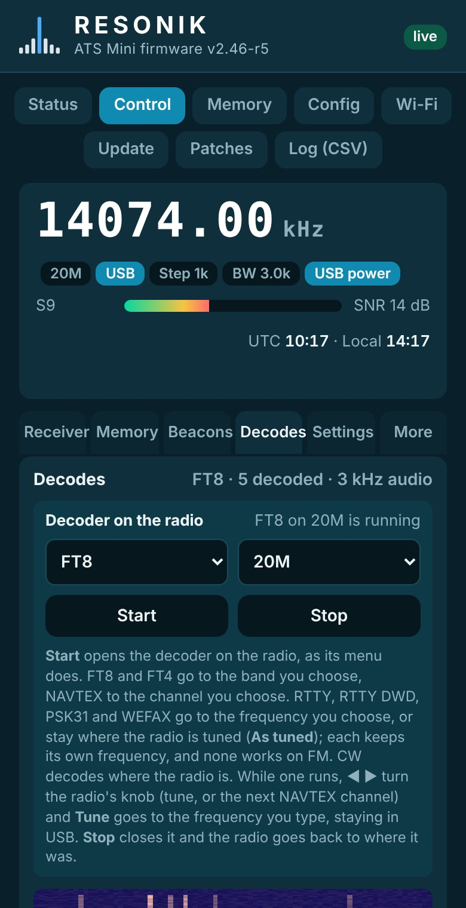
زبانهی Decodes: ردیف دیکودر و آبشار طیفپایینتر: لوکیتور، DX alarm و پیامها
شروع دیکودر از مرورگر
ردیف Decoder on the radio دیکودرها را بدون دست زدن به رادیو شروع و متوقف میکند. FT8 یا FT4 و یک باند، یا CW، RTTY، RTTY DWD، NAVTEX، PSK31 یا WEFAX را انتخاب کنید و Start را بزنید. FT8 و FT4 به باندی که انتخاب کردهاید میروند و NAVTEX به کانالی که در فهرست دوم انتخاب کردهاید. برای RTTY، RTTY DWD، PSK31 و WEFAX فهرست دوم فرکانسهایی را دارد که هر کدام در آنها شنیده میشود (سرویس هواشناسی آلمان، Northwood، بخشهای RTTY و PSK31 باندها)، یا As tuned تا رادیو همانجا که هست بماند؛ CW همانجا که رادیو هست دیکود میکند. هنگام کار CW یا یک مد دیجیتال، ردیف زیر دکمهها فرکانس رادیو را نشان میدهد: ◀ ▶ مانند ولوم رادیو عمل میکنند (تنظیم فرکانس، یا کانال بعدی NAVTEX) و Tune به فرکانسی که وارد میکنید میرود و در USB میماند. Stop دیکودر را میبندد و رادیو به جای قبلی برمیگردد. خط کنار دکمهها میگوید چه چیزی در حال کار است.
همهی متن، و ذخیرهی آن
برای RTTY، NAVTEX و PSK31 کادر زیر آبشار طیف همهی متنی را که رادیو دیکود کرده، با همان سطربندی، نشان میدهد و با رسیدن متن تازه پایین میرود. برای خواندن بالا بروید؛ کادر همانجا میماند. مرورگر هر چه را هنوز ندارد از رادیو میگیرد، پس متنی که پیش از باز کردن صفحه دیکود شده هم هست.
Save text متن را در یک فایل متنی ذخیره میکند. Clear text فقط کادر همین صفحه را خالی میکند.
دو خط قرمز روی آبشار طیف تنهایی است که دیکودر به آنها گوش میدهد، مثل صفحهی رادیو. sync کنار نام مد یعنی NAVTEX روی ایستگاه قفل شده است.
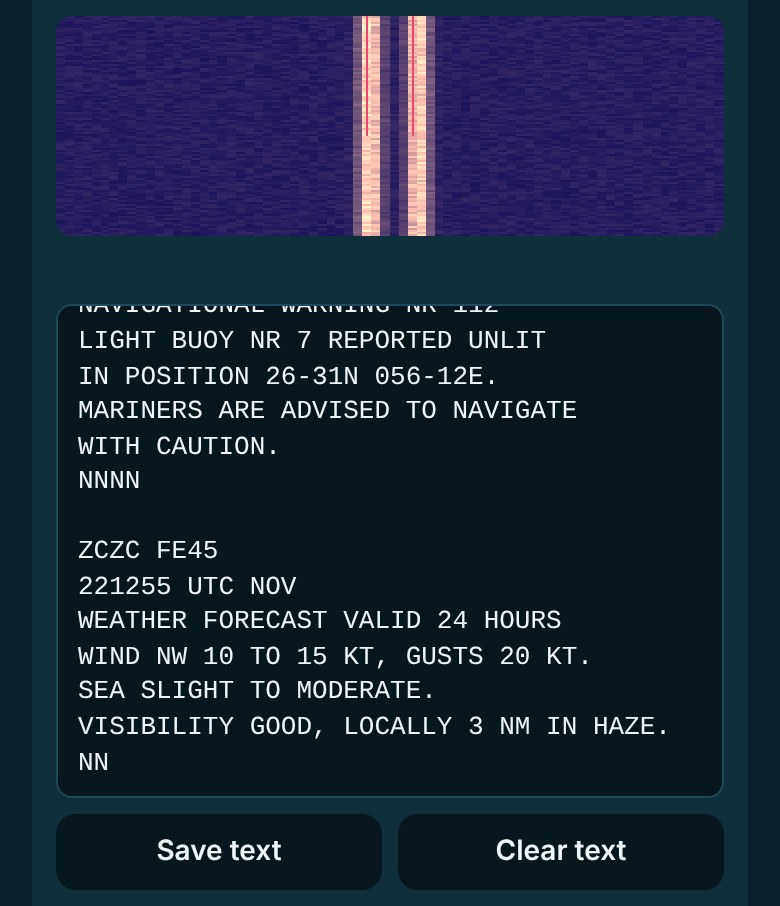
آبشار طیف با دو تن، همهی متن، و Save text
جدول زمانی NAVTEX
NAVTEX را انتخاب کنید تا جدول زمانی زیر دکمهها باز شود، برای کانالی که در فهرست دوم است. هر ایستگاه NAVTEX هر چهار ساعت ده دقیقه میفرستد، در نوبتی که حرف آن تعیین میکند: A در 00:00 UTC، B در 00:10، تا X در 03:50. همان حرف در آغاز هر پیام میآید: ZCZC FA12 از ایستگاه F است.
now، به رنگ سبز، ایستگاهی است که الان روی آنتن است، با دقیقههای باقیمانده. بقیه به ترتیب نوبت میآیند.
لوکیتور خود را در My locator (پایینتر در همین زبانه) بنویسید تا فاصلهی هر ایستگاه دیده شود. آنوقت Order جدول را به ترتیب زمان یا Nearest first (نزدیکترین اول) میچیند و Range ایستگاههای تا 1500 km، 3000 km یا 6000 km را نگه میدارد.
کلیک روی هر خط، NAVTEX را روی همان کانال شروع میکند. Show all همهی فهرست را باز میکند.
518 kHz به انگلیسی است، 490 kHz به زبان همان کشور، و 4209.5 kHz روی موج کوتاه تا دوردست میرسد. برای 518 kHz و 490 kHz شب بهترین زمان است. هشت کانال موج کوتاه پایینتر در فهرست، اطلاعات ایمنی دریای آزاد را میفرستند؛ ایستگاههای کمی آنجا کار میکنند و جدول زمانی ندارند.
NAVTEX انتخاب شده: جدول زمانی، نزدیکترین ایستگاهها برای شنوندهای در دبی
جدول ۲۳۸ ایستگاه دارد و در ۱ آذر ۱۴۰۵ با فهرستهای عمومی ایستگاهها مقایسه شده است (بخش ۲۹). ایستگاهها تغییر میکنند، و دیکودر یک رادیوی جیبی برای ناوبری نیست.
صدای دیکودر: 3 kHz یا 6 kHz
صفحههای FT8/FT4 و Digital به صدای خود رادیو گوش میدهند و این تنظیم میگوید چه مقدار از آن را بگیرند.
مقدار
کار
3 kHz fast (پیشفرض)
صدا تا 3 kHz. همهی آنچه FT8، FT4، RTTY، NAVTEX، PSK31 و WEFAX لازم دارند در آن هست، با نصف کار؛ پس رادیو و کنترل از مرورگر سریع میمانند. روی همین بگذارید.
6 kHz full
صدا تا 6 kHz، مانند نسخههای پیش از R5. رادیو دو برابر کار میکند و مرورگر ممکن است کندتر شود. فقط وقتی انتخاب کنید که کمتر از انتظار دیکود میشود، و هر دو را چند دقیقه روی یک باند مقایسه کنید.
روی رادیو: Menu ← Ham & SWL ← Dec. Audio، پیش از باز کردن صفحهی FT8/FT4 یا Digital. در کنترل از مرورگر: فهرست Decoder audio در زبانهی Decodes؛ آنجا تغییر بلافاصله اعمال میشود و آبشار طیف از نو شروع میشود. زبانه نشان میدهد کدام در کار است (3 kHz audio یا 6 kHz audio). دیکودر CW از این تنظیم اثر نمیگیرد.
۲۶سیگنالهایی برای امتحان دیکودرهاR5
دیکودری که چیزی نشان نمیدهد معمولاً دارد به یک فرکانس خالی گوش میدهد. سیگنالهای زیر آنقدر روی هوا هستند که بتوان هر دیکودر را با آنها امتحان کرد؛ چه در صفحهی خود رادیو و چه از زبانهی Decodes در کنترل از مرورگر. No signal یا Nothing decoded yet یعنی چیزی دریافت نشده، نه اینکه چیزی خراب است. فرکانسها و ساعتها عوض میشوند: اگر ایستگاهی نبود، دوباره جستوجو کنید.
با FT8 روی ۲۰ متر در روز شروع کنید. اگر فهرست پر شد، رادیو، آنتن و ورودی دیکودر همه سالماند، و صفحهی خالی در مد دیگر فقط یعنی آن ایستگاه نیست یا خیلی ضعیف است. کنار پنجره، یا با چند متر سیم روی آنتن، خیلی بیشتر شنیده میشود.
دیکودر
کجا تنظیم کنید
چه میبینید
FT8
باند 20M، 14.074 MHz (صفحه خودش تنظیم میکند). در روز 15M و 10M هم، و شب 40M و 80M.
شلوغترین سیگنالهای موج کوتاه: روی باند باز، ظرف یک دقیقه فهرستی از نشانهها. اول همین را امتحان کنید: اگر FT8 دیکود شود، آنتن، باند و ساعت درستاند.
FT4
باند 20M، 14.080 MHz. ایستگاهها خیلی کمتر از FT8 هستند و بیشتر آخر هفتهها و در مسابقهها.
بلوکهای کوتاه حدود ۴٫۵ ثانیهای در آبشار طیف. با FT8 روی همان باند مقایسه کنید: اگر FT8 پر است و آبشار FT4 خالی، کسی روی FT4 نیست.
CW
بیکنها روی 14.100 MHz (بخش ۱۰)، یا پایین باندهای 40M و 20M: 7.000 تا 7.040 و 14.000 تا 14.070 MHz.
نشانهها و فراخوانهای CQ. بیکن اول نشانهی خود را میفرستد و بعد چهار خط بلند.
RTTY DWD
سازمان هواشناسی آلمان، شبانهروز روی 4583، 7646 و 10100.8 kHz. در USB، 1.5 kHz پایینتر تنظیم کنید: 10099.3 kHz، یا شب 7644.5 و 4581.5 kHz.
بین بولتنها خطهای RYRYRY، سپس گزارشها و پیشبینیهای هوا، بیشتر به انگلیسی. فرکانس تن بهجای No signal به رنگ سبز دیده میشود. فرستنده در آلمان است: از راه دور ضعیف است و عصر و شب بهتر شنیده میشود.
RTTY
RTTY آماتوری، 14.080 تا 14.099 MHz، بیشتر آخر هفتهها و در مسابقهها.
فراخوانهای CQ و ردوبدلهای مسابقه با حروف بزرگ.
NAVTEX
518 kHz (صفحه خودش تنظیم میکند؛ با ولوم به 490 kHz و 4209.5 kHz بروید). هر ایستگاه ساحلی هر چهار ساعت ده دقیقه میفرستد، هر کدام در نوبت خودش: جدول زمانی NAVTEX در زبانهی Decodes (بخش ۲۵) نشان میدهد چه ایستگاهی روی آنتن است و نوبت بعدی با کیست. شب بهترین زمان است.
هشدارهای دریانوردی و هوا برای کشتیها؛ با ZCZC شروع و با NNNN تمام میشود.
PSK31
14.070 MHz در USB، و 7.040 MHz. این روزها ایستگاه کم است.
خطهای باریک و ثابت در طیف؛ حروف کوچک و بزرگ که با دست تایپ شدهاند.
WEFAX
Northwood (بریتانیا): 4610، 8040 و 11086.5 kHz. در USB، 1.9 kHz پایینتر تنظیم کنید: در روز 8038.1 یا 11084.6 kHz، و شب 4608.1 kHz.
نقشهی هوا که خط به خط رسم میشود؛ یک نقشهی کامل ۱۰ تا ۲۰ دقیقه طول میکشد. تصویر کج هم نشان میدهد که سیگنال خوانده میشود.
۲۷اعلام نسخهی جدید، پشتیبان و صفحهی StatusR5
اعلام نسخهی جدید
وقتی Wi-Fi وصل است، رادیو چند دقیقه پس از اتصال به شبکه و سپس روزی یک بار نگاه میکند که آیا نسخهی تازهتری از RESONIK منتشر شده است. اگر باشد، صفحهای با Update now، Later و Skip this version نشان میدهد؛ بهروزرسانی تنظیمات و حافظهها را نگه میدارد. یک پیکان کوچک کنار علامت Wi-Fi، و نواری در صفحهی وب رادیو، نشان میدهند که یک بهروزرسانی منتظر است. Menu ← System ← Upd. Notice ← Off این نگاه کردن خودکار را خاموش میکند؛ Menu ← System ← Update FW همچنان هر وقت بخواهید بررسی و بهروزرسانی میکند.
صفحهای که با انتشار نسخهی تازه دیده میشود
نسخهی پشتیبان و بازگردانی
پایین صفحهی Config وب رادیو بخش Backup and Restore هست. Download a backup یک فایل با همهی تنظیمات، باندها، حافظهها و شبکههای Wi-Fi ذخیره میکند. Restore چنین فایلی را، از همین رادیو یا رادیوی دیگر، میگیرد، همه چیز را با آن جایگزین میکند و رادیو را دوباره راه میاندازد. پیش از بازگشت به تنظیمات کارخانه، و برای اینکه رادیوی دوم را مثل اولی تنظیم کنید، پشتیبان بگیرید.
فایل پشتیبان رمزهای Wi-Fi شما را در خود دارد. آن را خصوصی نگه دارید.
صفحهی Status
اولین صفحه از صفحههای وب رادیو، Status، نشانی، فریمور، ساعت، باند و فرکانس را نشان میدهد و از R5 اینها را هم: رادیو چه مدت است روشن است، چرا آخرین بار دوباره راه افتاد (روشن شدن، بهروزرسانی، خطا، watchdog، افت ولتاژ)، دمای پردازنده و سرعتی که تنظیم کردهاید، حافظهی آزاد و قدرت سیگنال Wi-Fi. کنار هر عدد با یک کلمه نوشته شده که خوب، متوسط یا بد است، به رنگ سبز، زرد یا قرمز. اگر رادیو خودبهخود دوباره راه افتاد، پیش از خاموش کردن، خط Last restart را اینجا بخوانید و همراه گزارش خود بفرستید.
صفحهی Status: هر عدد با ارزیابی آن
۲۸ارسال بازخورد و رفع اشکال
هر گزارش، چه یک ایراد کوچک و چه یک پیشنهاد، به بهتر شدن نسخهی بعدی کمک میکند. در گروه تلگرام پیام بدهید یا در GitHub یک Issue باز کنید: github.com/ep3mhb/resonik-ats-mini/issues. لطفاً بنویسید:
مدل رادیو (V3، V4 یا V4B)
نسخهی فریمور (Menu ← System ← About)
چه کاری انجام دادید و چه اتفاقی افتاد
در صورت امکان یک عکس یا ویدیوی کوتاه از صفحه
مشکلات رایج
مشکل
راهحل
ولوم گامها را جا میاندازد یا برای هر گام دو بار باید چرخاند
Menu ← System ← Knob: مقدار دیگر (20 یا 30 clicks)
ساعت --:-- است
بخش ۷: Wi-Fi ← Sync Only یا تنظیم دستی
نام بیکن نمایش داده نمیشود
ساعت باید تنظیم و درست باشد
دکمهی Install درگاهی نشان نمیدهد
کابل USB دیگری (کابل داده) امتحان کنید؛ Chrome یا Edge روی کامپیوتر
منوی قدیمی را میخواهید
Menu ← Display ← Menu Style ← Classic
برنامهی EiBi روزها را نشان نمیدهد
یک بار دیگر Load EiBi
صفحهی FT8، CW یا Digital: No audio یا In 0
این صفحهها برد V4B میخواهند (صفحهی Hardware سایت) و هدفون باید جدا باشد
یک دیکودر No signal نشان میدهد
آنجا چیزی دریافت نمیشود: سیگنالهای بخش ۲۶ را امتحان کنید، اول FT8
رادیو خودبهخود دوباره راه افتاد
خط Last restart را در صفحهی Status وب رادیو یادداشت کنید (بخش ۲۷)
FT8 چیزی دیکود نمیکند
باند دیگری را امتحان کنید (۲۰ یا ۱۰ متر در روز، ۴۰ متر در شب)؛ رادیو را کنار پنجره ببرید و شارژر را جدا کنید
الفآموزش مدهای دیجیتالR5
این پیوست آموزش کوتاهی در شنیدن سیگنالهاست. برای هر نوع سیگنالی که رادیو دیکود میکند میگوید چیست و چه کسی آن را میفرستد، در آبشار طیف چگونه دیده میشود، چگونه روی آن تنظیم کنید و نوشتهی دیکودر را چگونه بخوانید، و یک تمرین پیشنهاد میکند. هر تمرین با این جمله پایان مییابد که از کجا بدانید آن را آموختهاید.
پیامهای نمونه ساختگیاند و نشانههای نمونه دارند. تصویرهای آبشار طیف ضبط نشدهاند، بلکه از سیگنال هر مد همراه با نویز محاسبه شدهاند تا هر مد بهروشنی دیده شود. این تصویرها همانگونه رسم شدهاند که زبانهی Decodes آبشار طیف را رسم میکند: در پهنا از 300 تا 2700 Hz، و تازهترین لحظه در بالا.
ترتیب پیشنهادی برای یادگیری
مرحله
مد
چرا به این ترتیب
۱
FT8
روی هر باند باز، در روز و شب، روی هواست. اگر دیکود شود، رادیو، آنتن و دیکودر همه سالماند.
۲
بیکنهای CW
بیکنهای روی 14100 kHz نشانهی خود را طبق جدول زمانی ثابتی میفرستند، پس میدانید دیکودر باید چه بنویسد.
۳
RTTY DWD
شبانهروز روی هواست و هر بار همان نوع بولتن را میفرستد.
۴
NAVTEX
هر چهار ساعت ده دقیقه: جدول زمانی میگوید چه وقت.
۵
WEFAX
تصویر خط به خط ساخته میشود: سیگنال پایدار و حوصله لازم است.
۶
PSK31 و RTTY آماتوری
افرادی که با دست تایپ میکنند: ایستگاهها کمترند، بیشتر عصرها، آخر هفتهها و در مسابقهها.
هر مدی با چند متر سیم روی آنتن، کنار پنجره، با باتری و دور از شارژر و لامپ LED بهتر دریافت میشود. سیگنالی که دیکود نمیشود معمولاً بیش از حد ضعیف است، نه اینکه اشتباه تنظیم شده باشد.
الف-۱مبانی
مد دیجیتال چیست؟ ایستگاه فرستنده متن یا تصویر را به تنهایی در محدودهی صدای انسان تبدیل میکند و روی یک فرکانس رادیویی میفرستد. رادیو آنها را در USB به شکل صدا دریافت میکند و دیکودر صدا را دوباره به متن تبدیل میکند. دیکودر سیگنالهایی را میخواند که برای گوش بسیار ضعیف یا بسیار سریعاند.
فرکانس رادیو و تن. در USB رادیو آنچه را درست بالای فرکانس خود است به صدا تبدیل میکند: سیگنالی که 1500 Hz بالاتر از آن است به شکل تنی با فرکانس 1500 Hz شنیده میشود. اگر رادیو را 100 Hz بالاتر تنظیم کنید، تن 100 Hz پایین میآید. پس دو عدد با هم معنا دارند: فرکانسی که رادیو روی آن است (kHz، در سربرگ صفحه) و تنی که دیکودر پیدا کرده است (Hz، به رنگ سبز).
چرا پایینتر از فرکانس اعلامشده تنظیم میکنیم؟ فهرست ایستگاهها فرکانس خودِ سیگنال را میدهد. برای اینکه تنهای آن در میانهی صدا، حدود 1500 Hz، شنیده شوند، رادیو به همان اندازه پایینتر تنظیم میشود: برای RTTY DWD به اندازهی 1.5 kHz، و برای WEFAX که تنهایش حول 1900 Hz است به اندازهی 1.9 kHz. صفحهها NAVTEX، FT8 و FT4 را خودشان تنظیم میکنند؛ در FT8 و FT4 فرکانس اعلامشده همان فرکانسی است که رادیو روی آن گذاشته میشود و ایستگاهها در 3 kHz بالای آن پخشاند.
سرعت و شیفت. باود (baud) تعداد نمادهایی است که ایستگاه در یک ثانیه میفرستد؛ در RTTY و NAVTEX هر نماد یک بیت است. شیفت فاصلهی دو تن RTTY و NAVTEX از یکدیگر است. هر چه مد کندتر باشد، پیام با سیگنال ضعیفتری هم میرسد: FT8 برای یک پیام کوتاه ۱۳ ثانیه وقت میگذارد و سیگنالهایی را میخواند که شما نمیشنوید.
طیف و آبشار طیف. طیف در صفحهی Digital رادیو نشان میدهد هر تن در این لحظه چقدر قوی است. آبشار طیف در صفحهی FT8 و در زبانهی Decodes زمان را هم میافزاید: هر خط یک لحظه است و تازهترین در بالاست، پس هر سیگنال ردی رسم میکند. پهنای رد نشان میدهد سیگنال چه مقدار از باند را میگیرد و الگوی آن نشان میدهد چگونه کلید زده میشود.
نسبت سیگنال به نویز، به dB. FT8 و FT4 به هر پیام عددی مانند −12 میدهند: اینکه سیگنال چقدر بالاتر از نویز است، به دسیبل، با نویزی که در پهنای 2500 Hz اندازه گرفته شده است. 0 dB یعنی هماندازهی کل آن نویز؛ −20 dB یکصدم آن است و باز هم دیکود میشود. هر 3 dB توان را دو برابر میکند و 10 dB ده برابر.
UTC. ایستگاهها، جدولهای زمانی و دیکودرها از زمان هماهنگ جهانی استفاده میکنند. رادیو آن را کنار ساعت محلی نشان میدهد (بخش ۷). UTC چهار ساعت از وقت امارات و سه ساعت و نیم از وقت ایران عقبتر است.
لوکیتور. لوکیتوری مانند LL75 نام یک مربع روی نقشه است، ۲ درجه طول جغرافیایی در ۱ درجه عرض جغرافیایی؛ LL75 دبی را در بر میگیرد. پیامهای FT8 لوکیتورهای چهارحرفی دارند و زبانهی Decodes آنها را روی نقشهی خود میگذارد. لوکیتور خود را در My locator بنویسید تا فاصلهها را ببینید.
الف-۲FT8 و FT4
FT8، یک دقیقه (شبیهسازیشده): ایستگاههای دو نوبت هر ۱۵ ثانیه جای خود را به هم میدهندFT4، نیم دقیقه (شبیهسازیشده): بلوکهای پهنتر، هر ۷٫۵ ثانیه
معرفی. FT8 و FT4 پرکاربردترین مدهای دیجیتال در باندهای آماتوریاند و از نرمافزار WSJT-X ساختهی جو تیلور (Joe Taylor, K1JT) و همکارانش آمدهاند (FT8 در سال ۲۰۱۷ و FT4 در سال ۲۰۱۹). ایستگاهها طبق ساعت به نوبت میفرستند: FT8 در هر دورهی ۱۵ ثانیهای ۱۲٫۶ ثانیه میفرستد و FT4 در هر دورهی ۷٫۵ ثانیهای ۵ ثانیه. هر ارتباط ردوبدل کوتاه و ثابتی از نشانهها، لوکیتور و گزارش سیگنال است، پس با سیگنالهای بسیار ضعیف هم انجام میشود: FT8 تا حدود −21 dB، و FT4 که حدود 3 dB سیگنال قویتری لازم دارد.
شکل سیگنال. بلوکهایی به پهنای حدود 50 Hz (در FT4 حدود 80 Hz) و به درازای یک نوبت دیده میشوند که در هر دوره یک ردیف میسازند. ایستگاههایی که در دورهی دیگر میفرستند، فاصلهی میان ردیفها را پر میکنند.
روش تنظیم. تنظیمی لازم نیست: صفحهی FT8/FT4 (بخش ۱۶) به فرکانس FT8 یا FT4 باند میرود و همهی سیگنالهای 3 kHz بالای آن را یکجا دیکود میکند. در روز ۲۰ یا ۱۵ متر و شب ۴۰ یا ۸۰ متر را انتخاب کنید.
روش خواندن. رادیو هر پیام را با dB، تن (Hz) و متن آن فهرست میکند؛ زبانهی Decodes کشور و نقشه را هم اضافه میکند. یک ارتباط کامل، به ترتیبی که انجام میشود:
آنچه دیکودر مینویسد
معنی
CQ K1ABC FN42
K1ABC از لوکیتور FN42، در شمال شرقی آمریکا، همه را فرا میخواند (CQ).
K1ABC G4XYZ IO91
G4XYZ از IO91، حوالی لندن، به K1ABC پاسخ میدهد.
G4XYZ K1ABC -12
K1ABC گزارش G4XYZ را میدهد: −12 dB.
K1ABC G4XYZ R-08
G4XYZ دریافت را تأیید میکند (R، roger) و گزارش خود را میدهد: −8 dB.
G4XYZ K1ABC RR73
K1ABC: همه دریافت شد، با بهترین آرزوها (73). ارتباط کامل است.
K1ABC G4XYZ 73
G4XYZ خداحافظی میکند.
نشانهی اول ایستگاهی است که فراخوانده میشود و نشانهی دوم ایستگاهی که فرا میخواند. CQ DX فقط ایستگاههای دوردست را میخواهد؛ CQ با واژهای دیگر پس از آن، مانند TEST یا POTA، میگوید چه ایستگاههایی خواسته شدهاند.
تمرین
FT8 را در روز روی ۲۰ متر، یا عصر روی ۴۰ متر، باز کنید و بگذارید پنج دقیقه، با زبانهی Decodes باز، کار کند.
سه فراخوان CQ و کشورهایی را که از آنها آمدهاند پیدا کنید.
یک ارتباط را از CQ تا 73 دنبال کنید و بنویسید هر خط را کدام ایستگاه فرستاده است.
ضعیفترین پیام (کمترین dB) را پیدا کنید و گوش دهید: آیا اصلاً آن را میشنوید؟
وقتی آن را آموختهاید که بتوانید دربارهی هر خط بگویید کدام ایستگاه کدام را فرا میخواند و چه فرستاده است.
الف-۳CW
معرفی. CW همان کد مورس است: قدیمیترین روش فرستادن متن با رادیو، که هنوز هر روز آماتورها، شرکتکنندگان مسابقهها و بیکنها به کار میبرند. یک تن به شکل نقطه و خط قطع و وصل میشود. سرعت به کلمه در دقیقه (WPM) است؛ در 20 WPM هر نقطه 60 ms طول میکشد (۱۲۰۰ تقسیم بر WPM).
شکل سیگنال. خطی باریک دیده میشود که به نقطهها و خطها شکسته شده است. چند ایستگاه با سرعتهای گوناگون کنار هم دیده میشوند.
روش تنظیم. در مد CW، با سیگنال در وسط فیلتر CW. صفحهی دیکودر CW (بخش ۱۷) سرعت را از ۵ تا ۴۰ کلمه در دقیقه دنبال میکند و نشان میدهد.
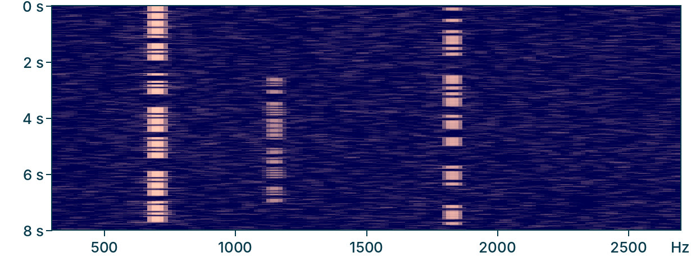
CW، هشت ثانیه (شبیهسازیشده): سه ایستگاه با سرعتهای 18، 28 و 12 WPM
روش خواندن. CW پر از اختصار است:
آنچه دیکودر مینویسد
معنی
CQ CQ DE K1ABC K1ABC K
فراخوان همه (CQ) از طرف (DE) K1ABC؛ تمام (K).
K1ABC DE G4XYZ G4XYZ K
G4XYZ پاسخ میدهد.
GE UR RST 579 NAME JOE
عصر بهخیر؛ گزارش شما 579 است: خوانایی ۵ از ۵، قدرت ۷ از ۹، کیفیت تن ۹ از ۹؛ نام من جو است.
QTH LONDON
محل من لندن است.
TU 5NN 14
ردوبدل مسابقه: متشکرم، 599 (N به جای 9)، منطقهی ۱۴.
73 SK
با بهترین آرزوها؛ پایان ارتباط.
اختصارهای دیگر: TNX متشکرم؛ FER برای؛ PSE لطفاً؛ R دریافت شد؛ AGN دوباره؛ KN تمام، فقط برای ایستگاه فراخواندهشده؛ AR پایان پیام. دیکودر به جای حرفی که نمیتواند بخواند * مینویسد.
تمرین
رادیو را روی 14100 kHz در CW تنظیم کنید و دیکودر CW را باز کنید. بیکنهای آنجا (بخش ۱۰) هر ده ثانیه به نوبت میفرستند؛ هر کدام نشانهی خود را میفرستد و سپس چهار خط بلند، هر یک ده برابر ضعیفتر از قبلی.
سه نشانه را که دیکودر نشان میدهد بنویسید و با نام بیکنها در خط ایستگاه رادیو مقایسه کنید.
خطهایی را که میشنوید بشمارید: شنیدن هر چهار خط یعنی مسیر حتی با یکدهم وات هم باز است.
عصر، پایین باند ۴۰ متر (7000 تا 7040 kHz) را بگردید، یک CQ پیدا کنید و نشانه و سرعت آن را بخوانید.
وقتی آن را آموختهاید که نشانههایی که دیکودر مینویسد با بیکنهایی که رادیو نام میبرد یکی باشند.
برای اینکه خودتان مورس را با گوش بخوانید، با RESONIK CW Trainer در cw.mikroutik.com تمرین کنید.
الف-۴RTTY
معرفی. RTTY یا رادیوتلهتایپ، کد تلهپرینتر قرن گذشته، ITA2 (که اغلب بودو، Baudot، نامیده میشود)، را به شکل دو تن میفرستد. هر حرف پنج بیت است میان یک بیت شروع و بیتهای پایان؛ آماتورها با سرعت 45.45 baud و فاصلهی 170 Hz میان دو تن میفرستند، یعنی حدود شش حرف در ثانیه. امروز بیشتر در مسابقهها شنیده میشود، وقتی ایستگاههای زیادی همزمان روی هوا هستند.
شکل سیگنال. دو خط موازی با فاصلهی 170 Hz دیده میشوند که هنگام ارسال هر دو روشناند، چون ایستگاه سریعتر از آنچه آبشار طیف بتواند نشان دهد میان آنها جابهجا میشود.
روش تنظیم. ولوم را آهسته در بخش RTTY یک باند بچرخانید، روی ۲۰ متر از 14080 تا 14099 kHz، تا دو قله روی خطهای قرمز صفحه بنشینند (بخش ۲۴). ایستگاههای عادی و وارونه یکسان خوانده میشوند.
RTTY، هشت ثانیه (شبیهسازیشده): ایستگاهی در حال فراخوان، و ایستگاهی ضعیفتر
روش خواندن. ITA2 فقط حروف بزرگ دارد و ارقام همان کدهای حروف را به کار میبرند: یک نویسهی «حروف» یا «ارقام» میان این دو جابهجا میکند. اگر این نویسه از دست برود، ارقام به شکل حروف ردیف بالای صفحهکلید درمیآیند: 599 به شکل TOO خوانده میشود، چون 5 و T، و 9 و O یک کد دارند (1 همان Q است، 2 همان W، 3 همان E، و همینطور تا 0 که P است). پس از فاصله، دیکودر به حروف برمیگردد، همانطور که بیشتر ایستگاهها انتظار دارند. یک ارتباط مسابقه:
آنچه دیکودر مینویسد
معنی
CQ TEST K1ABC K1ABC
K1ABC در یک مسابقه فرا میخواند.
K1ABC G4XYZ
G4XYZ پاسخ میدهد.
G4XYZ 599 05 05
K1ABC: گزارش 599، و منطقهی خودش، ۵، دو بار.
K1ABC TU 599 14 14
G4XYZ: متشکرم، 599، منطقهی ۱۴.
TU K1ABC TEST
K1ABC: متشکرم، و دوباره فرا میخواند.
تمرین
آخر هفتهی یک مسابقهی RTTY را انتخاب کنید (برای نمونه CQ WPX RTTY در فوریه، یا CQ WW RTTY در سپتامبر).
روی ۲۰ متر، از 14080 kHz آهسته به بالا بچرخانید و روی هر جفت خط بایستید.
نشانهها و ردوبدل سه ارتباط را بنویسید.
وقتی آن را آموختهاید که پیش از رسیدن خط بعدی بتوانید بگویید چه خواهد بود.
الف-۵RTTY DWD: هواشناسی برای کشتیرانی
معرفی. سازمان هواشناسی آلمان (Deutscher Wetterdienst، DWD) هوای کشتیرانی را شبانهروز با RTTY از پینهبرگ، نزدیک هامبورگ، میفرستد: 50 baud با فاصلهی 450 Hz میان دو تن، روی 4583، 7646 و 10100.8 kHz، بیشتر به انگلیسی. این یک پخش است: کسی پاسخ نمیدهد و همان نوع بولتنها در ساعتهای ثابت میآیند.
شکل سیگنال. دو خط پایدار با فاصلهی 450 Hz دیده میشوند. میان بولتنها ایستگاه RYRYRY میفرستد: R و Y الگوهای بیتی وارونهی یکدیگرند و ارتباط را آزمایش میکنند.
روش تنظیم. 1.5 kHz پایینتر از فرکانس اعلامشده تنظیم کنید: در روز 10099.30 kHz، و شب 7644.50 یا 4581.50 kHz. فهرست دوم در زبانهی Decodes هر سه را دارد.
RTTY DWD، هشت ثانیه (شبیهسازیشده): RYRYRY، سپس یک سرعنوان
روش خواندن. هر بولتن با سرعنوانی آغاز میشود که نام آن را میگوید و سپس پیشبینی هر منطقهی دریایی را میدهد. یک نمونهی ساختگی:
آنچه دیکودر مینویسد
معنی
RYRYRYRYRYRY
میان بولتنها: دیکودر با سیگنال هماهنگ است.
FQEN70 EDZW 221100
سرعنوان. FQEN70 نام بولتن است (در جدول زمانی DWD، گزارش هوای دریای شمال و دریای بالتیک)؛ EDZW سازمان هواشناسی آلمان است؛ 221100 یعنی روز ۲۲ ماه، ساعت 11:00 UTC.
GERMAN BIGHT
یک منطقهی دریایی (خلیج آلمان).
SW 5, LATER W 6
باد جنوب غربی با نیروی ۵ در مقیاس بوفورت، بعداً غربی ۶. نیروی ۵ یعنی ۱۷ تا ۲۱ گره و ۶ یعنی ۲۲ تا ۲۷ گره.
SEA 2 M, VIS GOOD
موج حدود ۲ متر؛ دید خوب.
DWD جدول زمانی بولتنهای خود را در وبسایتش (dwd.de، بخش کشتیرانی) منتشر میکند؛ گزارشی برای شرق مدیترانه، به انگلیسی، هم میان آنهاست.
تمرین
در روز روی 10099.30 kHz (شب 7644.50 یا 4581.50 kHz) تنظیم کنید و RTTY DWD را باز کنید.
منتظر RYRY و سپس یک سرعنوان بمانید؛ آن را بنویسید و روز و ساعتش را بخوانید.
یک منطقهی دریایی و نیروی باد آن را پیدا کنید.
وقتی آن را آموختهاید که متن یک دقیقهی پیوسته به شکل واژههای کامل خوانده شود. اگر حروف اغلب اشتباه میآیند، یکی دیگر از سه فرکانس را امتحان کنید.
الف-۶NAVTEX
معرفی. ایستگاههای ساحلی پیامهای ایمنی برای کشتیها میفرستند: هشدارهای دریانوردی، هواشناسی، جستوجو و نجات. هر ایستگاه هر چهار ساعت ده دقیقه میفرستد، در نوبتی که حرف آن تعیین میکند: روی 518 kHz به انگلیسی، روی 490 kHz به زبان همان کشور، و روی 4209.5 kHz در موج کوتاه. سیگنال از نوع SITOR-B است: 100 baud با شیفت 170 Hz، و هر حرف دو بار فرستاده میشود تا اگر نسخهی اول خراب شد، دیکودر از نسخهی دوم استفاده کند.
شکل سیگنال. دو خط با فاصلهی 170 Hz دیده میشوند، مانند RTTY ولی سریعتر. هر پیام با دستکم ده ثانیه فازبندی (phasing) آغاز میشود، الگویی ثابت که گیرنده با آن قفل میشود؛ روی صفحه sync نوشته میشود.
روش تنظیم. تنظیمی لازم نیست: با چرخاندن ولوم، یا انتخاب در زبانهی Decodes، به کانال بروید. جدول زمانی میگوید نوبت کدام ایستگاه است (بخش ۲۵).
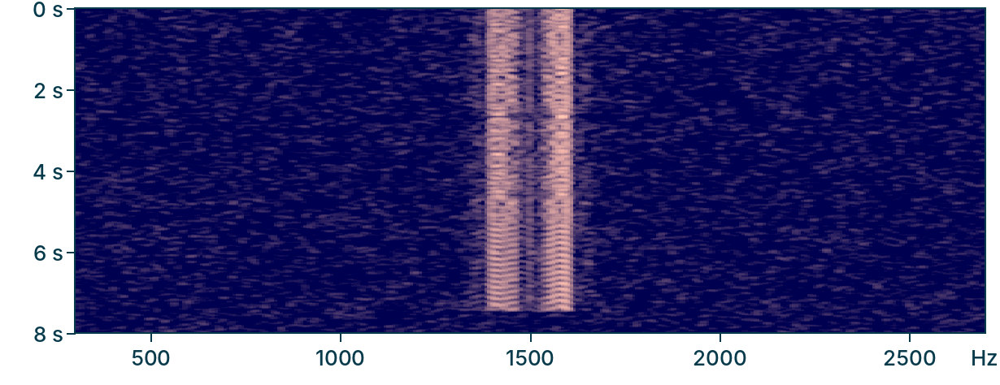
NAVTEX، هشت ثانیه (شبیهسازیشده): فازبندی، سپس یک پیام
روش خواندن. همهی پیامها چارچوب یکسانی دارند. یک نمونهی ساختگی:
آنچه دیکودر مینویسد
معنی
ZCZC FA12
آغاز پیام. F: حرف ایستگاه. A: موضوع (پایینتر). 12: شمارهی پیام؛ 00 برای فوریترین پیامها نگه داشته میشود که هر گیرندهای چاپ میکند.
221250 UTC NOV 26
زمان صدور: ۲۲ نوامبر ۲۰۲۶ (۱ آذر ۱۴۰۵)، ساعت 12:50 UTC.
NAV WARNING NR 112 …
متن خود پیام.
NNNN
پایان پیام.
A هشدار دریانوردی
B هشدار هواشناسی
C گزارش یخ
D جستوجو و نجات، دزدی دریایی
E پیشبینی هوا
F خدمات راهنمایان دریایی
G AIS
H LORAN
J ناوبری ماهوارهای
K دیگر کمکهای ناوبری
L هشدارهای دریانوردی بیشتر
Z پیامی برای ارسال نیست
گیرندهی کشتی نمیتواند A، B و D را خاموش کند. V تا Y برای خدمات ویژه نگه داشته شدهاند.
تمرین
در زبانهی Decodes مد NAVTEX را انتخاب کنید و لوکیتور خود را بنویسید: جدول زمانی نزدیکترین ایستگاهها و نوبت بعدی را نشان میدهد.
NAVTEX را دو دقیقه پیش از نوبت آن ایستگاه روی همان کانال شروع کنید و منتظر sync بمانید.
برای هر پیام، حرف ایستگاه، موضوع و شماره را از خط ZCZC آن بنویسید.
متن را روی رادیو دوباره بخوانید (فشار دادن و چرخاندن) و از مرورگر ذخیره کنید.
وقتی آن را آموختهاید که بتوانید موضوع همهی پیامهای یک نوبت را بگویید. برای 518 و 490 kHz شب بهترین زمان است؛ 4209.5 kHz دورتر میرسد.
الف-۷PSK31
معرفی. PSK31 برای گفتوگوی تایپی میان آماتورهاست و پیتر مارتینز (Peter Martinez, G3PLX) آن را در سال ۱۹۹۸ ساخت. فاز یک تن برای فرستادن بیتها وارونه میشود، ۳۱٫۲۵ بیت در ثانیه. آنقدر باریک است که دهها ایستگاه در پهنای 3 kHz که رادیو میشنود جا میشوند. حروف کدهایی با طولهای گوناگون دارند و کد حروف پرکاربرد کوتاهتر است؛ کد حروف کوچک از حروف بزرگ کوتاهتر است، پس بیشتر افراد با حروف کوچک تایپ میکنند.
شکل سیگنال. یک خط باریک دیده میشود. ایستگاه هنگام انتظار وارونهسازیهای پیوستهی فاز میفرستد که به شکل دو خط با فاصلهی 31 Hz دیده میشوند؛ با شروع تایپ، این دو خط یکی میشوند.
روش تنظیم. روی خود فرکانس اعلامشده تنظیم کنید: 14070.00 kHz روی ۲۰ متر و 7040.00 kHz روی ۴۰ متر. ایستگاهها در 3 kHz بالای آن هستند. صفحه قویترین را میخواند؛ خط قرمز نشان میدهد کدام را.
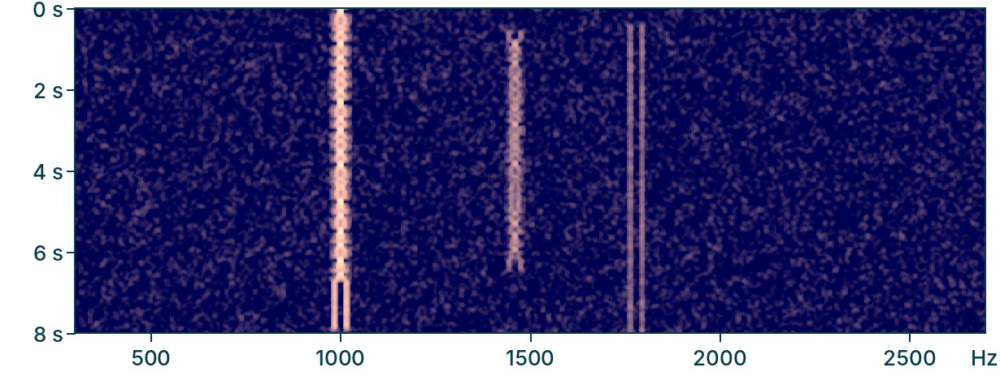
PSK31، هشت ثانیه (شبیهسازیشده): ایستگاهی در حال تایپ، ایستگاهی ضعیفتر، و ایستگاهی در انتظار (دو خط)
روش خواندن. بسیار شبیه CW، با حروف کوچک:
آنچه دیکودر مینویسد
معنی
cq cq cq de k1abc k1abc pse k
فراخوان همه؛ لطفاً پاسخ دهید.
k1abc de g4xyz g4xyz kn
G4XYZ پاسخ میدهد، فقط برای K1ABC (kn).
ge joe tnx fer call ur rst 599
عصر بهخیر جو، از فراخوانتان متشکرم، گزارش شما 599 است.
73 tu sk
با بهترین آرزوها، متشکرم، پایان ارتباط.
تمرین
عصر یک روز آخر هفته روی 14070.00 kHz تنظیم کنید و PSK31 را باز کنید.
صبر کنید تا یک رد به یک خط تبدیل شود، سپس نشانه و نام را بخوانید.
دقت کنید که متن با حروف کوچک و با سرعت تایپ ایستگاه میآید، و وقتی تایپ متوقف شود متن هم میایستد.
وقتی آن را آموختهاید که بتوانید یک نوبت کامل از گفتوگو را بیوقفه دنبال کنید.
الف-۸WEFAX: نقشههای هوا
معرفی. WEFAX (رادیوفکس) نقشههای هوا را به شکل تصویر میفرستد. روشنی هر نقطه با تنی میان 1500 Hz (سیاه) و 2300 Hz (سفید) فرستاده میشود، ۱۲۰ خط در دقیقه، پس هر نقشه ۱۰ تا ۲۰ دقیقه طول میکشد. سرویسهای هواشناسی این نقشهها را طبق جدول زمانی ثابتی برای کشتیها میفرستند؛ ایستگاه Northwood، نزدیک لندن، روی 4610، 8040 و 11086.5 kHz میفرستد.
شکل سیگنال. هر نقشه با چند ثانیه تن شروع آغاز میشود (خطهای روشن با فاصلههای مساوی)، سپس خطهای فازبندی که به دیکودر نشان میدهند هر خط از کجا شروع میشود، و سپس خود تصویر: نواری پهن از 1500 تا 2300 Hz که در 2300 Hz، جایی که کاغذ سفید است، از همه روشنتر است.
روش تنظیم. 1.9 kHz پایینتر از فرکانس اعلامشده تنظیم کنید: 8038.10 kHz، شب 4608.10 kHz و روز 11084.60 kHz.
روش خواندن. تصویر روی رادیو و، بزرگتر، در زبانهی Decodes رسم میشود که Save picture آن را دانلود میکند. نقشهی سطح زمین فشار هوا را به شکل خطها (همفشارها)، پرفشارها (H)، کمفشارها (L) و جبههها نشان میدهد، با عنوان و زمان اعتبار (UTC) در یک گوشه. نقشههای دیگر پیشبینی یک روز یا بیشتر، ارتفاع موج یا دمای آب دریا را نشان میدهند. تصویر کمی کج هم یعنی سیگنال خوانده میشود.
تمرین
در روز روی 8038.10 kHz (شب 4608.10 kHz) تنظیم کنید، WEFAX را روی رادیو و زبانهی Decodes را در مرورگر باز کنید.
منتظر تن شروع و خطهای فازبندی بمانید، سپس بگذارید نقشه ۱۵ دقیقه ساخته شود.
تصویر را ذخیره کنید؛ عنوان، زمان، یک H و یک L آن را پیدا کنید.
وقتی آن را آموختهاید که بتوانید عنوان نقشه و زمان اعتبار آن را بخوانید.
الف-۹واژههای این پیوست
73 با بهترین آرزوها.
CQ فراخوان هر ایستگاهی.
dB نسبت توان: 3 dB دو برابر، 10 dB ده برابر، −20 dB یکصدم.
DE از طرف.
FSK کلیدزنی با جابهجایی فرکانس: دو تن، یکی برای هر نوع بیت.
ITA2 (Baudot) کد پنجبیتی RTTY.
K، KN تمام؛ KN یعنی تمام، فقط برای ایستگاه فراخواندهشده.
QTH محل ایستگاه.
RST گزارش سیگنال: خوانایی، قدرت و تن، مانند 599.
RY الگوی آزمایشی RTTY.
SNR نسبت سیگنال به نویز، به dB.
sync دیکودر با زمانبندی سیگنال قفل شده است.
USB باند کناری بالا: رادیو آنچه را درست بالای فرکانس خود است به صدا تبدیل میکند.
UTC زمان هماهنگ جهانی.
Varicode کد PSK31: کدهای کوتاه برای حروف پرکاربرد.
WPM کلمه در دقیقه؛ هر نقطه ۱۲۰۰ تقسیم بر WPM میلیثانیه طول میکشد.
ZCZC، NNNN آغاز و پایان پیام NAVTEX.
آبشار طیف طیف در طول زمان، با تازهترین لحظه در بالا.
باود تعداد نمادهایی که در یک ثانیه فرستاده میشود؛ در RTTY و NAVTEX، بیت در ثانیه.
بوفورت مقیاس نیروی باد در دریا، از ۰ تا ۱۲.
دوره، نوبت یک دورهی FT8 (۱۵ ثانیه) یا FT4 (۷٫۵ ثانیه).
شیفت فاصلهی دو تن از هم، به Hz.
فازبندی الگویی ثابت پیش از پیام NAVTEX یا نقشهی فکس، تا گیرنده قفل شود.
فرکانس تن جای سیگنال در صدا، به Hz.
فرکانس رادیو فرکانسی که رادیو روی آن تنظیم است، همان که روی صفحهاش دیده میشود.
لوکیتور مربعی از نقشه مانند LL75، ۲ درجه در ۱ درجه.
مارک و اسپیس دو تن RTTY و NAVTEX.
۲۹سازندگان و مجوز
نسخهی RESONIK: EP2MHB (محمد بحرالعلوم). بر پایهی ats-mini اثر PU2CLR (Ricardo Caratti)، Volos Projects، Ralph Xavier، Sunnygold، Goshante، G8PTN (Dave)، R9UCL (Max Arnold)، Marat Fayzullin و همهی مشارکتکنندگان. دیکودر FT8 از ft8_lib اثر Karlis Goba استفاده میکند، به پیروی از فورک epiHATR؛ چند اصلاح از فورکهای jokubasver و mattafaak آمده است. کد منبع با مجوز MIT در GitHub است.
جدول ایستگاههای NAVTEX با World NAVTEX Database for DXers از Alan Gale G4TMV (ndblist.info)، فهرست List of Navtex stations در ویکیپدیا و فایل ایستگاههای fldigi مقایسه شده است.
RESONIK وابسته به سازندگان رادیوهای ATS Mini نیست. نصب فریمور غیررسمی با مسئولیت خود شماست؛ نسخهی پشتیبان امکان بازگشت را میدهد.
 RESONIK
RESONIK